Before getting started with LiveCode, there are a number of things you may want to know. This guide introduces LiveCode, tells you where to begin, how to install, register and how to use the documentation.
LiveCode makes it easy to turn your concepts, ideas or designs into powerful applications. You can create desktop, Internet, database and network applications. LiveCode includes a complete graphical user interface builder, as well as the tools you need to produce faceless or background applications.
LiveCode is easy to learn. If you are a complete beginner to the world of programming, you will find you can become productive quickly. If you are an experienced programmer, you will find the environment extremely powerful and one of the most productive you have used.
LiveCode’s programming language is object-based. This makes it easy to write modules of code that are attached directly to individual objects. Unlike other languages, LiveCode lets you both run and edit an application live. Traditionally the run, edit, compile and debug cycle in programming takes up a lot of time. In LiveCode all of these activities can take place together.
If you’re coming from another language, you’ll appreciate that the LiveCode language is typeless, with data automatically stored in the most efficient format and converted, so you don’t have to learn how to deal with different types of data. Memory management is fully automatic. LiveCode applications are not interpreted in the traditional sense, so they provide excellent performance. A LiveCode graphical application will often feel more responsive to use than a Java application, and take less time to write.
A LiveCode application is completely cross-platform. That means you can run any application you create on all major modern operating systems, including Windows, Linux, Unix and Mac OS. Unlike most other cross-platform frameworks, a LiveCode application will always look and feel native on each platform that you deliver it on. You can take advantage of many platform specific features on each platform.
LiveCode removes the need to learn how to access most individual programming interfaces for each operating system. This saves you the time and effort of learning thousands of platform-specific interface calls.
The goal of this manual is to provide the most accessible, comprehensive and useful guide to LiveCode possible. We aim to provide a level of depth that covers the advanced feature set, while remaining accessible to beginners. We hope you find this material useful and enjoy using LiveCode.
We recommend you start by taking a look at our online resources. There is a wide variety of introductory material there, including step-by-step examples and guides for performing common tasks.
Memory and disk requirements below are for the LiveCode development environment, not for applications created by LiveCode. Applications created with LiveCode will require sufficient free system resources to load, display, process and interact with the content of the application. Because this will vary considerably depending on the application created, it is not possible to publish a list of requirements for applications built with LiveCode. You will need to test your application to determine the minimum requirements. Many LiveCode applications will run on a moderately powerful computer and require substantially fewer resources than those listed for the development environment, others will require more.
To use LiveCode you will need:
1024x768 or larger monitor
True color display (16-bit or 32-bit depth)
At least 256Mb of memory
At least 150Mb of disk space
LiveCode supports the following versions of Windows:
Windows 2000 SP4
Windows XP SP2 and above
Windows Server 2003
Windows Vista SP1 and above (both 32-bit and 64-bit)
Windows 7 (both 32-bit and 64-bit)
Windows Server 2008
The minimal requirements for LiveCode to run on Linux are:
Although impossible to test every existing Linux distribution, we are aiming to ensure that LiveCode runs on as wide a variety of systems as possible. To achieve this, the engine has been implemented to have minimal direct dependencies on system software, and will gracefully degrade in feature set if it cannot find the libraries it needs. Generally any recent linux distribution including Gnome/GTK support will have the required libraries for full feature support – for example, Ubuntu 7 supports all these features (although alpha blended window shape support requires you to be running with 'Advance Desktop Effects' turned on).
LiveCode supports the following versions of Mac OS X:
Language Terms
This documentation contains examples of LiveCode language syntax. The syntax for each language term is provided in boldface text.
The syntax description uses the standard conventions to indicate parts of the syntax:
[] Square brackets enclose optional portions.{} Curly braces enclose sets of alternatives from which to choose.| Vertical bars separate different alternatives.\ Line continuation character – this line continues to the next
line.Code examples are provided in typewriter text or
code blocks
When you are told to choose an item from a menu, the menu name is written, followed by an arrow, followed by the menu item. For example File -> New means choose "New" from the "File" menu.
Many menu items have keyboard equivalents. These items can be accessed by holding down a modifier key and pressing another key. The modifier keys used throughout this document are generally the modifier keys used on Windows, Linux and Unix. If you are using Mac OS, you may need to substitute modifier keys using the table below. For example, if you are using a Mac, where we say press control-x in this documentation, you may need to press command-x.
| Windows and Linux keyboard shortcuts | Mac equivalent |
|---|---|
| Control | Command |
| Alt | Option |
Figure 2– Cross-platform Keyboard Shortcuts
Screenshots are used extensively throughout the documentation. Please remember that LiveCode is a cross-platform application. While many of the snapshots are taken on the Windows platform, most of the feature set will work on Linux, Unix and Mac OS. Snapshots of these platforms are used from time to time and are also used to illustrate platform specific features.
Tip: This style of note tells you about an alternative way to do something or describes a shortcut.
Important: This style of note describes an aspect of LiveCode that may confuse you if you don't know about it and tells you how to avoid unexpected behavior.
Note: This style of note provides some additional information that may be useful, or emphasizes a key point.
Caution: This style of note warns you about a potential problem that might cause an error or loss of data.
The LiveCode documentation is spread across four areas; the Start Center, the Dictionary (API), the Guides and other resources.
The Start Center is aimed at introducing you to LiveCode, and should be your first port of call if you have not used LiveCode before. The dictionary, or API, is a reference resource which you can refer to while implementing your projects. Guides are online resources at livecode.com. Other resources include Sample Stacks, a free, online repository of user-contributed stacks, User forums, and the resources page at livecode.com/resources/.
You can access the documentation from within LiveCode from the Help menu. Additional resources are available at www.livecode.com.
The purpose of the Start Center is to introduce you to LiveCode and provide you with enough knowledge to start implementing your own projects. It can be accessed by choosing Help -> Start Center.
The first time you open the Start Center you will see an invitation to take the Interactive Tour, a step-by-step tutorial that guides you through creation of a simple project in LiveCode. If you choose to skip the tour you may always enter it later by clicking the Interactive Welcome button in the Start Center.
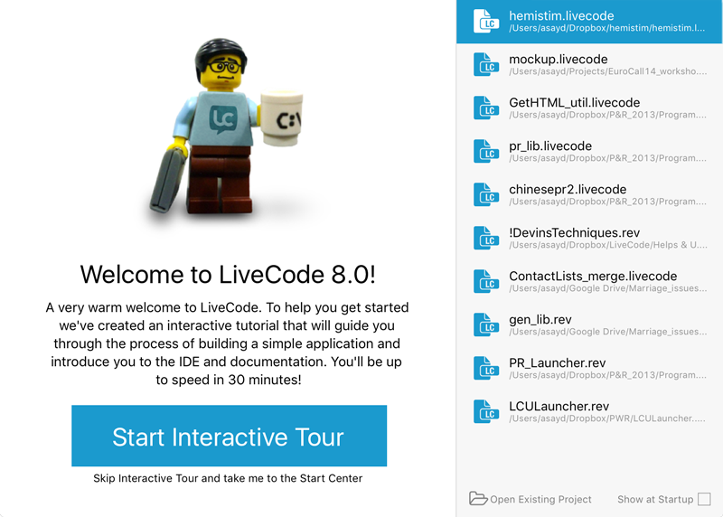
The Start Center itself is split across three sections—quick links to the LiveCode pages on various social media sites; a collection of quick link buttons, which take you to various helps and guides; and a list of your most recently opened stacks.
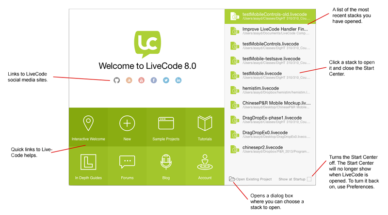
LiveCode maintains pages on popular social media sites, such as Facebook, YouTube, LinkedIn and Stack Overflow. These can help you keep up to date on LiveCode product announcements, professional networking, and help and training resources.
This shows a list of your most recently opened stacks. Double click on a stack to open it and close the Start Center window.
The quick link buttons let you quickly access tutorials, sample projects, guides, LiveCode blog posts, and online user forums. Here is an overview of these links:
Enter the Interactive Tour, a step-by-step tutorial that guides you through creation of a simple project in LiveCode.
Click this button to create a new stack. You will see a menu of common stack types and sizes to choose from. Once you choose your stack size or type the new stack will be created and the Start Center menu will close.
The Sample Projects button opens an online repository of sample stacks submitted by LiveCode developers. The repository contains dozens of stacks that you can download for free and use as you wish.
Opens the LiveCode online tutorial web page. From here you can choose one of dozens of lessons and how-to tutorials that give you step-by-step instructions on how to create things, from a simple "hello world" application to simple games to sophisticated graphical effects.
Opens the LiveCode Dictionary. Here you can choose to enter the API documentation, the definitive reference of all of the terms in the LiveCode scripting language. Or you can open one of several user guides, which describe in detail how to develop and deploy apps in LiveCode.
LiveCode has a very active and friendly user community. We encourage all new users to sign up to our mailing list and user forums as they are a great way to get technical help, meet new people and keep up-to-date with what is going on in the world of LiveCode. The “User Forums” section provides a link to our forum registration page as well as a list of links to the most recent posts which have been made.
This button takes you to LiveCode's online blog, where LiveCode engineers and developers regularly post updates about what's new in LiveCode, how-to tutorials, and announcements of interest to the LiveCode developer community.
Click this button to log in to your LiveCode online store account. There you can see your purchases, as well as look for useful add-ons to make LiveCode and even more powerful development tool.
The LiveCode Dictionary contains detailed reference materials for developing applications with LiveCode. It is divided into two main sections—the LiveCode API reference and the LiveCode Guides. It can be accessed by choosing Dictionary (API) from the Help menu, or by clicking the Dictionary icon on the LiveCode Toolbar.
The LiveCode Application Programming Interface, or API, reference contains the complete syntax for all LiveCode components, including LiveCode Script, LiveCode Builder, and all installed widgets and libraries. If you are new to LiveCode you will likely spend most of your time in LiveCode Script, the scripting language used in developing LiveCode applications. The examples that follow will be taken from the LiveCode Script API, but the API documentation for all components uses the same format and layout.
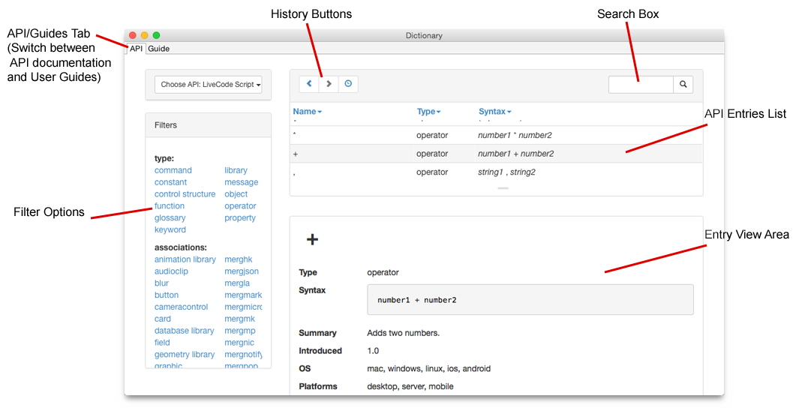
To search one of the API lists, click on the API tab at top left, then choose the API you want to search from the option list. For example, to search for a LiveCode Script term, choose LiveCode Script.
Searching. If you know what term you want to look up, or if you have a good idea of what it might be, just start typing it into the search box, and a list of terms that match your search term will appear in the entries list.
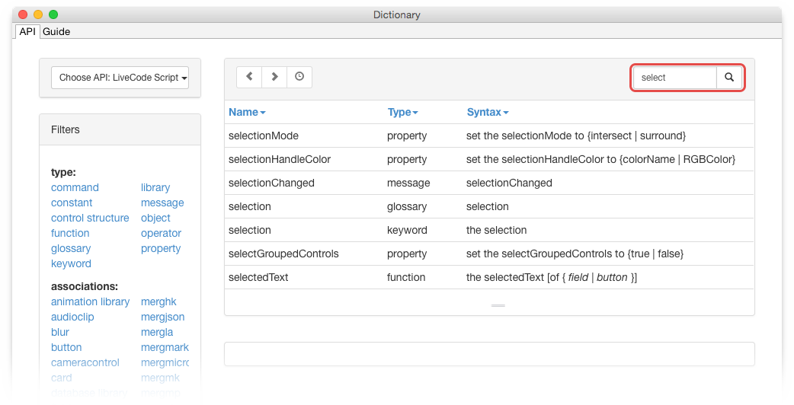
Filtering. If, on the other hand, you don’t know the name of the term, but have a general idea of what terms you want to look at you can filter the list of terms by clicking on a filter topic. For instance, to see a list of messages that buttons can respond to, click "message" under the type category and "button" under associations. You can clear a filter by clicking again on the selected filter.
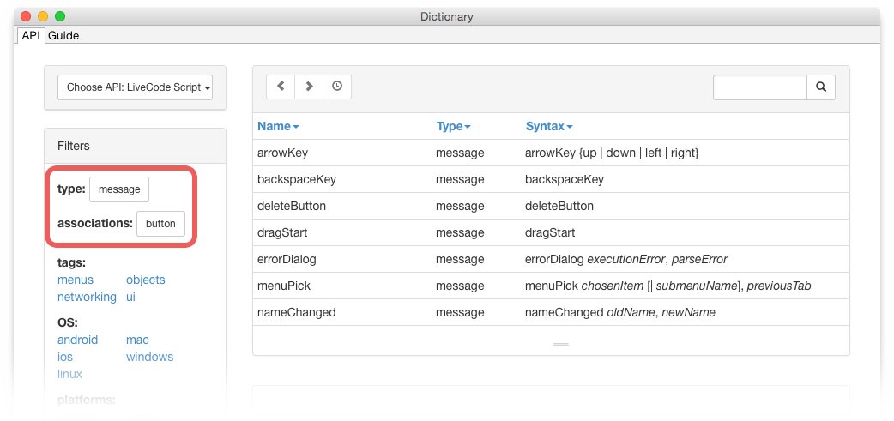
Note that the entries list displays only the entry name, token type, and syntax for the entry. You can view the complete entry by clicking on the desired line in the list. This will show the entry in the area underneath the entries list. Each LiveCode scripting term is thoroughly documented with the proper syntax, detailed examples, a detailed description, related terms, and more.
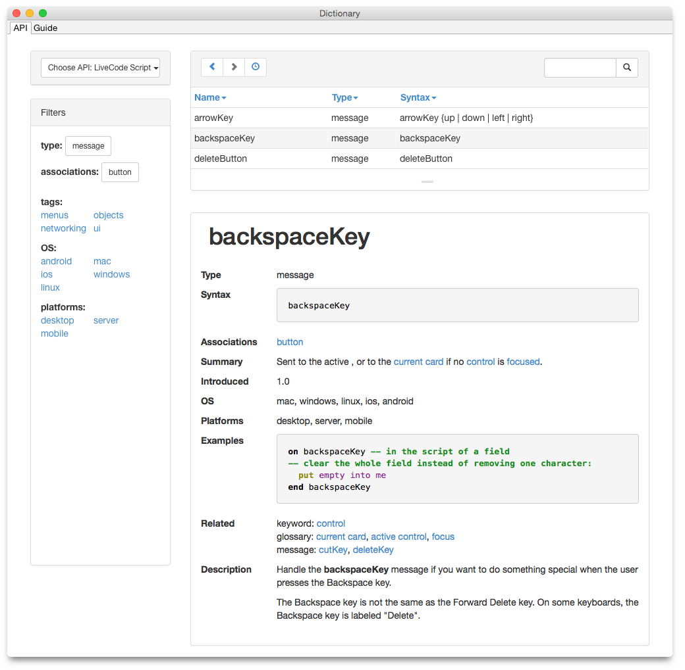
The User Guides are a complete reference to LiveCode. They detail what the dialogs and windows within the development environment do, and explain the LiveCode language in depth. To open a guide, click on the Guide tab in the Dictionary and choose the desired guide from the list.
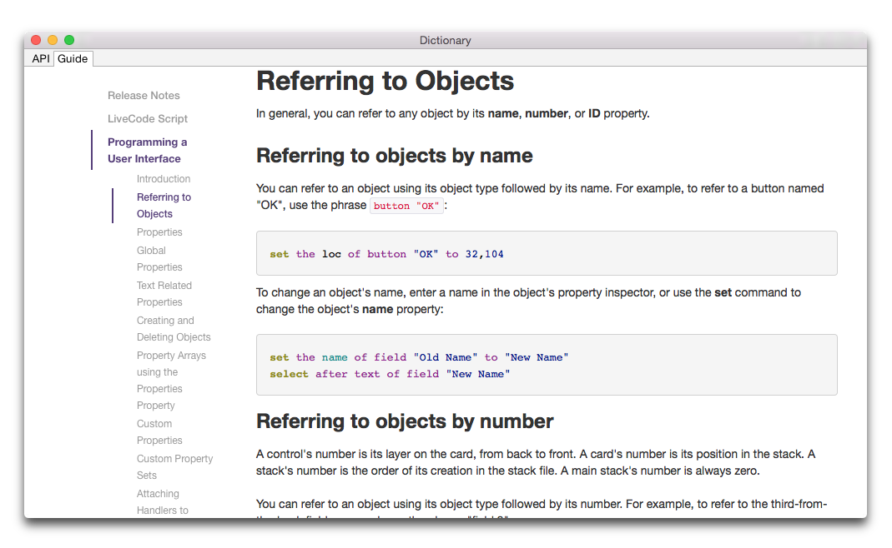
RevOnline gives you the opportunity to upload and share your projects as well as download those created by other members of the LiveCode online community. It can be accessed via the Sample Stacks button located in the menu bar. The main interface can be seen below:
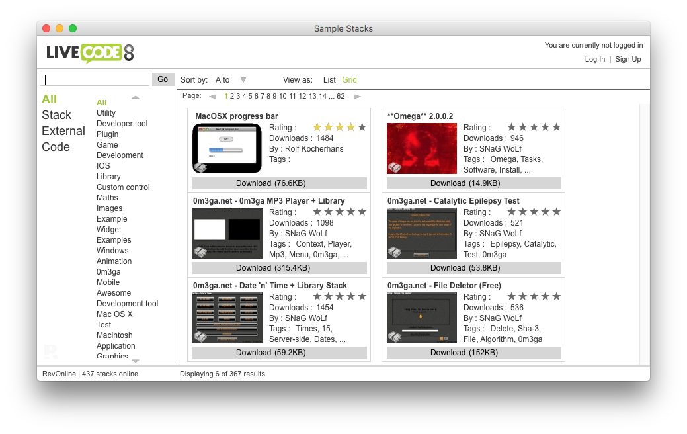
The interface is designed to organise the online content into various categories to aid you in finding the kind of content you wish to download. You will find three main types of content in RevOnline, stacks (LiveCode programs), externals and code snippets. Externals are libraries that can extend the functionality of the LiveCode language using a lower level language. A code snippet is a portion of LiveCode script that you can paste into and incorporate into your own projects.
The results of searching or browsing through the RevOnline content are displayed in the search list area. This is an explanation of the controls you can use to adjust the parameters of your search:
| Search field | Enter text and press return or click “Go” to search. Matches will be made against the titles of uploaded content, the author’s name and content descriptions. |
| Type list | Highlight one of the items in this list filter search to only show results of that type. Selecting “All” will display content of all three types. |
| Tag list | Tag your own and others people’s content with a word or phrase. All tags are listed here alphabetically. Selecting a tag will filter the search results for uploads that have been tagged accordingly. Selecting “All” will remove the filtering. |
| Search order | Change the order in which the search results are displayed. There are four options. “A to Z” lists content alphabetically by title, “Popularity” by the number of times it has been downloaded, “Rating” by the average user rating (out of five stars) and “Date” by the date on which the content was uploaded to RevOnline |
| Order direction | The direction (ascending/descending) of the search order can be changed by clicking on the arrow to the right of the sort control. |
| View mode | The search list area can be viewed in two modes, a vertical scrolling list or a grid. In “list” mode 10 results will be displayed per page, in “grid” mode the number of results displayed will be dependent upon the size of the RevOnline stack. Whilst in “grid” mode the viewing pane area will not be visible. |
| User filter | If you apply user filter to a search, the user’s name will appear above the type and tag lists (see below), subsequently only content by that user will be returned in the search results. Clicking on the button or text of the user filter will remove it. |
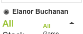
The search list area displays a preview of the results your search has returned. At the top of this list you will see the page controls which allow you to navigate forwards and backwards through the pages of your search should it return more results than can be displayed on one page.
An example of the search list previews can be seen below:
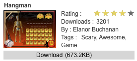
At the top of the preview is the content’s name. You can also see its average user rating out of five stars, the total number of times it has been downloaded, the authors name and a list of tags applied to this upload. The “download” button at the bottom will download and launch this particular stack, it also tells you the size of the download. The preview image can either be a custom screenshot as above or one of three standard images. These are black for stacks, red for code snippets and green for externals. The type icon in the lower left corner of the preview image also indicates the type, these are shown below for a stack, code snippet and external respectively:
Clicking on the preview image or content title will update the right hand viewing pane with more detailed information about this upload. Clicking on the authors name will display the author’s user profile in the viewing pane and introduce a user filter to the search results. When the search list is in “grid” mode the viewing pane will be hidden, doing either of the above operations will cause the search list to switch back to “list” mode and display the associated content in the viewing pane.
The viewing pane displays detailed information on users and uploads.
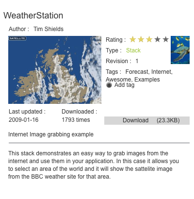
If you are a viewing stack details as shown above, in addition to the information provided by the preview you will also see a headline, description and a revision number which is incremented whenever the author uploads a new version of their stack, code snippet or external. Clicking on the author’s name or user profile image will display their profile view. Clicking on the content type or any of the tags in the list of applied tags will apply these filters to the search controls. When viewing an external your will see an additional “Platform:” field that indicates which platforms the external library is compatible with, make sure your operating system is supported before downloading and installing an external. If you are currently logged in to your Rev Online account you will be able to give the upload a rating by hovering over the rating control and clicking when the rating you wish to submit is displayed, this can only be done once per upload. You can also tag the upload by clicking on the add tag control which brings up following dialog:
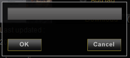
As you type into the text entry field, tag suggestions will appear in a drop down menu that can be selected using the arrow keys. Once you have finished typing press the ok button to submit your tag, you must be logged in to complete this operation.
The status bar at the bottom of the RevOnline interface displays the number of results your search has returned as well as a progress bar indicating the progression of searches and downloads. You will also see text feedback in response to the operations you perform such as “Retrieving stack details ...” and “Content tagged” etc.
In the top right corner of RevOnline you will find the login controls which will display your current login status as shown below:
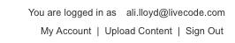
In order to upload, rate and tag content in RevOnline you must have an account, this account is also required for making comments in the wiki docs detailed elsewhere. To register for an account just click on the “Sign Up” control and enter your email in the dialog that appears. Your email address will be used as your username for logging in, a password will be emailed to you upon signing up. After receiving this email you must hit the activation link in the email before your account can be accessed. Once activated, you can login to your account using the “Log In” control pictured above which will bring up the following dialog:

The “Remember me” check box will cause RevOnline to maintain your username in the “Email :” field between login attempts. The “Sign in automatically” check box will mean that you are automatically signed in upon opening RevOnline, however if you explicitly sign out you will have to re-enter your password regardless of this preference. If you forget your password at any time you can use the “Forgot your password?” link in the login dialog to have a new one emailed to you.
Upon logging in and viewing your profile for the first time you will be presented with your profile view in edit mode where you have the opportunity to enter information about into the highlighted fields and change your profile picture using the change profile picture control as shown below:
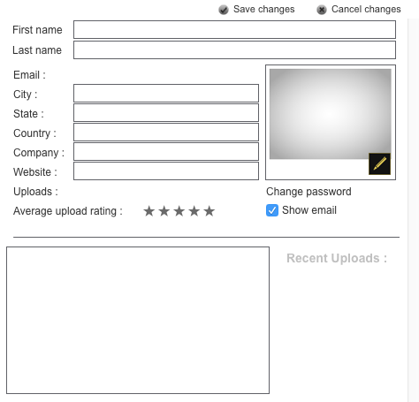
Clicking on the change profile picture control will bring up the following dialog:
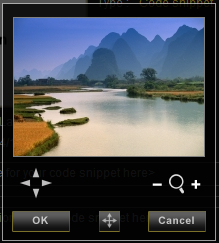
Use the Position Controls to move the centre of the image up, down, left or right. You can zoom in or out using the Zoom controls. Pressing the Re-centre image button will reset the image to its original position and zoom level. Once you are happy with orientation of your picture click ok, or cancel to discard your changes. This dialog is also used to change stack preview pictures.
When you have finished editing your profile you can hit the “save changes” button to submit your information, a minimum of a first and last name must be entered before you can save. You can also choose to display your email or not and change your password to one of your choosing using the “Change password” control. You can reach this profile at any time by clicking on the “My Account” control in the login controls which will both display your profile and display all your uploads in the search list. To exit this view simply remove the user filter or hit the “My Account” control again.
To upload content to RevOnline simply click on the “upload content” in the login controls, you will then be presented with the content browser view.
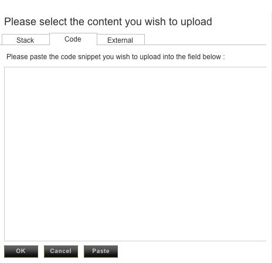
Clicking on the tabs at the top of this view will change the content type. Above you can see the code snippet view, it simply requires you to paste a section of code into the code entry field and press ok, if you have your code snippet stored in your clipboard you can simply press the “paste” button. For stacks you can either select a stack from the list of recently opened stacks or browse to the files location using the “browse” button. For externals you need to check which platforms your external will support and then browse to the appropriate file you wish to upload (shown below). The default file types for extensions on each platform are; “.dll” for Windows , “.bundle” for Mac OS X and “.so” for Linux.
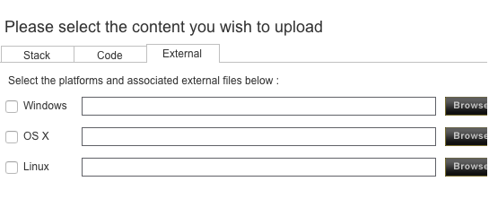
When uploading a code snippet or external RevOnline will place the code or file into an installer stack. The installer stacks give you the option to “install” or “try” an external file or “copy to clipboard” a code snippet. When using the try option with an external the file will be removed from your installation when you next exit LiveCode.
Once you have pressed ok you will be presented with the edit mode view for the file you are uploading. Here you can enter a name description and change the preview picture for your upload (note – you cannot edit the title of an external upload it must be the name of one of the files you have included). If you attempt to upload a file that has already been uploaded to RevOnline, you will be taken to the existing version of that file to edit, this avoids duplicate uploads.
Whenever you are viewing content that you have uploaded or your own profile whilst logged in the edit controls will appear above the viewing pane, shown below:
By clicking on the “edit profile” or “edit stack” (for stacks etc.) button you are entering edit mode which allows you to make changes to the information shown. When editing your profile you can simply save or discard the changes you have made. When editing an upload you have the additional options of deleting and updating the uploaded file. The delete control will permanently remove your upload from RevOnline. The update control allows you to replace the stack file, code snippet or external library with a newer version. Clicking on this control will present you with the content browser view discussed earlier. After you have chosen a replacement file you need to save your changes in order for the new file to be submitted.
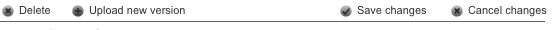
The list of tags applied to your own uploads can be altered by using the “Add/Delete tags” control
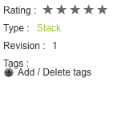
which will bring up the following dialog:
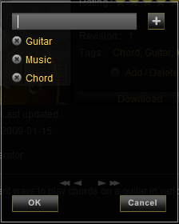
This works in a similar way to the previously explained tag dialog except that you can view the entire list of tags and edit which ones you wish to be displayed. When hitting return after entering the name for your tag a new tag item will appear in the list (also achieved by pressing the add tag button). Tags can be removed by clicking on the appropriate remove tag button. If your tag list is too large for one page you can browse through the pages of tags using the page controls at the bottom of the dialog. Once you have finished editing the list you can submit your changes by clicking the ok button.
Additional options for the RevOnline interface can be set in the RevOnline tab of the preferences stack. As pictured below:
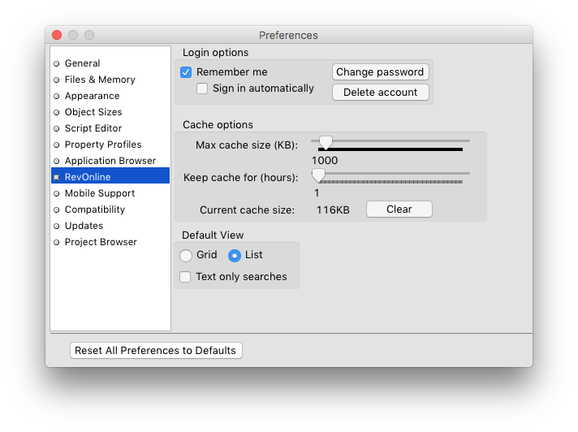
Here you can set the remember password and user name preferences and change your password to one of your choosing. The search results in RevOnline are cached to speed up performance. You can tweak the size and time for which this cache remains valid using the two slider controls. A larger cache will give you faster performance but will take longer to pickup changes made to the online content made by other users. If the text only searches option is checked RevOnline will only retrieve the text data for the search list previews which can also improve performance.
If you have a question that isn't answered in this documentation, you can find additional information to help you on our web site. You can also connect with the LiveCode developer community, which includes many experienced developers who offer their expertise for the common good to answer questions and help their fellow developers. You'll find example code, information on planned enhancements, and the latest updates. Visit:
There are a number of ways to engage with the LiveCode community:
The forums (section 1.6.3 above), are available for getting help from other developers, for discussing feature requests and future directions, and for receiving announcements from LiveCode.
Ask a question on stackoverflow.
Talk about LiveCode on the LiveCode subreddit.
Join the LiveCode user group on Facebook.
Use the LiveCode mailing list is also available.
Tip: Tip: You can use the Google search engine to search the list archives, using this link
LiveCode offers up and running technical support to all users to assist you in getting the development environment working on your system.
Many editions include additional technical support for more advanced problems and questions. Where support is not included, a separate technical support contract for advanced support can be purchased.
Contact us here or at support@livecode.com.
Creating a simple graphical application in LiveCode can take just minutes. First you create a user interface, including any windows, palettes, dialogs you require. Then you populate the user interface with controls, like push buttons, check boxes, text fields or menus. Finally, you use LiveCode’s English-like programming language to tell your application how to behave.
Before you get started, you should be familiar with how to use your computer. You should also be familiar with common applications such as a web browser, word processor and email client. If you are using Linux or Unix, you should be familiar with basic use of the command line. If you are not familiar with using a computer, we recommend you spend some time getting acquainted before trying to learn LiveCode.
A LiveCode application is driven by user actions. LiveCode constantly watches the computer for common actions, such as clicking on a button, typing into a field, sending data across a network, or quitting an application.
Whenever an event occurs, LiveCode sends a message. When writing your program, you decide what messages you want your program to respond to. LiveCode automatically sends each message to the most relevant object. For example, if a user clicks on a button, LiveCode sends a message to the button. You place code within the button that tells it how to respond to being clicked on.
There are a wide range of possible events. When a user clicks on a button, a series of events are sent to the button. For example, when the mouse first moves within the border of the button a mouseEnter message is sent. Then a series of mouseMove messages are sent as the mouse moves over the button. When the mouse button is depressed a mouseDown message is sent. When the mouse is released a mouseUp message is sent. You don’t have to respond to all of these events. You simply place code within an object to handle the events you want your application to respond to.
Events that are not handled by individual objects can be handled in a number of ways at different levels of your application, in libraries, or they can be ignored. The rules that govern what happen to events that are not processed by an object are described in the section The Message Hierarchy.
We’ll return to Event Driven Programming in more detail in the section Coding in LiveCode.
Any graphical application you build using LiveCode will be based on objects. With LiveCode you typically create the objects of your application before writing any code. You can start by drawing the buttons, text fields, and other controls that make up your application. LiveCode operates like other layout, drawing or application development environment. You can select controls by clicking them, move them by dragging them around, resize them, and change their ‘layer’ to move them closer or further from the ‘top’ of the interface.
Once you have the objects in place, you can proceed to attach code to each object to respond to the events you want. LiveCode includes a complete graphical development environment that makes it easy to create and edit any kind of user interface. It includes objects for all the basic operating system elements, including buttons, checkboxes, text fields, menus, graphics, and many more. In addition you can create and customize your own objects that look and behave however you want.
If you are writing a non-graphical application, you can choose to create objects to assist in organizing your code into sections and load these objects off screen, or you can simply write your code in a text file and run the text file directly. This method is commonly used to communicate with Apache and other web browsers when using LiveCode to build server-side or network applications.
Object-Based programming is covered in more detail in the section Building a User Interface. Non-graphical applications are covered in more detail in the section Building a Web Application.
Important: In order to enter run mode, choose the browse tool in the top left of the tools palette.
In order to edit, choose the pointer tool from the top right of the tools palette.
Unlike most other development systems, a LiveCode application can be created, edited, debugged and run live.
When in run mode, objects receive all the normal messages that drive a LiveCode application. For example, clicking on a button in run mode will cause a mouseUp message to be sent to it, causing the button's script to run if you've designed it to respond to the mouseUp message.
When in edit mode, objects do not receive messages when you click on them, and you can move, resize or edit the properties for objects.
Tip: To temporarily stop all messages being sent to your application while editing it, choose Suppress Messages from the Development menu or Toolbar.
There few other differences between the two tool modes. You can view and edit properties and code in either mode. Your application does not stop running while you make changes to it. Only mouse interaction with objects is suspended in edit mode to allow you to edit them more easily.
Because LiveCode is constantly live, you can easily make simple changes and watch each change take effect as you make it. This allows you to design and experiment using an iterative process, resulting in a more productive and satisfying development experience.
The first step in creating a LiveCode application is creating a window, which in LiveCode is called a stack. Each window you see in LiveCode is a stack. Palettes, dialog boxes, and standard windows are all stacks.
Each stack contains one or more sets of information called cards. Each card can have a different appearance or all the cards in a stack can look the same. By going from card to card in a stack, you change what's being displayed in that stack's window. You can think of a LiveCode stack as a stack of playing cards (hence the name), where you can flip through the cards, but only one card at a time is visible. A stack can have a single card or many cards. See Figure 3 – Stack file Structure, below.
All user interface objects (controls) are created by dragging them on to a card area.
You can also group controls together if you want them to operate as a set. For example, if you have a set of navigation buttons that go from card to card in your stack, you can make them into a single group. Groups can appear on more than one card, so your navigation buttons or background image can appear on each card of your stack. For more details, see the section on Group and Backgrounds.
A collection of stacks can be saved together in a single file. This file is known as a stack file. The first stack in the file is called the main stack and will be loaded automatically when your application is run.
Each LiveCode file contains one or more stacks: either a single main stack, or a main stack and one or more substacks. Since each stack is a window (including editable windows, modeless and modal dialog boxes, and palettes), a single stack file can contain multiple windows.
You can use this capability to bundle several related stacks into a single file for easy distribution, to organize your stacks into categories, or to allow several stacks to inherit properties from the same main stack.

Figure 3 – Stack File Structure
When you open a stack file, either by using the "Open Stack" menu item in the File menu or by using one of the navigation commands (see open, go, modal, modeless, palette, or topLevel in the LiveCode Dictionary), the stack file's main stack opens automatically to its first card.
Important: A stack file is saved as a whole. If you save a stack, all the other stacks in the same stack file are saved at the same time.
Substacks in the stack file do not open automatically when the stack file opens. You must open a substack in a handler or the Message Box, or by using the Application Browser.
The first stack created in a stack file is called the mainstack. Any other stacks created in the same stack file are called substacks of the mainstack.
The mainstack is part of the object hierarchy of all other stacks in the same stack file. In other words (for the purposes of inherited properties and shared behaviors), the mainstack contains its substacks. Events that are not handled by a substack are passed on to the mainstack's script, color and font properties are inherited from the mainstack by its substacks. For more details on the object hierarchy and inheritance in LiveCode in general, see the section on The Message Path.
Dialog boxes and palettes are commonly stored as substacks of the main application window, which is typically a mainstack. This allows you to store code and common functions used by all the substacks in the mainstack's script. Because mainstacks are part of the object hierarchy of their substacks, the substacks can call this functionality from scripts within the substack.
A stack file can be loaded into memory without actually being open. A stack whose window is closed (not just hidden) is not listed in the openStacks function. However, it takes up memory, and its objects are accessible to other stacks. (For example, if a closed stack loaded into memory contains a certain image, you can use the image as a button icon in another stack.)
If one stack in a stack file is loaded into memory, so are any other stacks in the same stack file. You cannot load one stack in a stack file without loading all the rest at the same time even if you open only one of the stacks.
A stack can be loaded into memory without being open under the following conditions:
A piece of code in another stack read or set a property within the closed stack. This automatically loads the referenced stack into memory.
The stack is in the same stack file as another stack that is open.
The stack was opened and then closed, and its destroyStack property is set to false. If the destroyStack property is false, the stack is closed but not unloaded when its window is closed.
Tip: To manipulate a stack window in an external, use the windowID property. For more information, see the LiveCode Dictionary.
When planning a project, it is important to consider what types of media you will need to access and how to structure access to that media.
LiveCode supports a wide range of media formats. Media can be accessed using the built-in media support, through QuickTime on older Mac OS X systems or via an external library. The advantage of using the built-in support is that you can consistently display or play back the media on all platforms without having to check that any 3rd party component has been installed. Other 3rd party libraries may allow a greater range of media access.
Since each loaded stack file takes up as much memory as the size of all its stacks, it is often advisable to place large, seldom-used objects (such as color pictures, sound, and video) in external files, which can be bundled with your application and loaded into memory only when you need them.
The built-in media support allows you to embed media directly within your stack file, or to reference it externally, storing it in a data folder, online or on a CD.
| Embedding Media within your project | Referencing Media externally |
|---|---|
| Allows distribution of a single-file application for easy, reliable distribution | Requires you to distribute the media files separately |
| Requires importing media whenever it is updated | Allows you to edit media files directly, they update automatically |
| Requires enough memory to load all the media | Makes it easy to load and unload media if you need to reduce memory requirements |
| Allows you to use the built-in editing capabilities directly | Requires you to import and export the media to use the built-in editing capabilities |
| Is less practical for creating large themed or localized applications where one set of media is replaced with another set | Makes it easy to create themed or localized applications by simply linking to a different directory |
Tip: When importing images, use the Image Library, or create a ‘library’ card that contains all the originals, then reference those objects throughout your project. For more details on referencing images, see the section on the button object.
For details of the image formats supported natively, see the section on the Image object. For details of the audio formats supported natively, see the section on the audioClip object. For details on how to control a movie, see the section on the Player object.
There are three main ways to use external files:
Keep media such as images, sounds, and video in external files, in the appropriate format, and use referenced controls to display the contents of the files. When you use a referenced control, the image, sound, or video file is loaded into memory only when a card that contains the referenced control is being displayed. The memory needed for the image, sound, or video is therefore only used when actually needed. By using relative file paths, you can move the application and its data files to any other system. For more details on using file paths, see the section on File Name Specifications and File Paths.
Note: To create a referenced control, use the "New Referenced Control" submenu in the File menu, or create an empty image or player object, then set the object's fileName property to a file path for the file you want to reference. For more details, see the section on Building a User Interface.
Keep portions of your application in a separate stack file, and refer to the stacks in that stack file as necessary. The stackFiles property simplifies referring to external stack files. When you set a stack's stackFiles property to include one or more file paths, the stacks at those locations become available to your stack by simply referring to the stacks by name.
Keep portions of your application on a server, and download them using the built in URL commands. For more details on the URL commands, see the section on Working with Files, URLs & Sockets.
You don't need to use an external database to store information for your application. You can store information in stacks, in text files, and in a variety of other files, read it into your application as needed, and modify it. However, as a rule of thumb, we recommend that when you have over two thousand records of information, or you want to allow multiple users to access information at the same time, you consider using a database.
In these circumstances an external database offers many advantages. A database located on your local machine will be fast and efficient at accessing and searching records. A database located on a server can be accessed by more than one user. Depending on the particular implementation, a database may be suitable for constant access by hundreds of users, each receiving and updating data continually. SQL databases have built-in record-locking capabilities, preventing one user's changes from wiping out another's— a necessity for reliable multi-user databases. Other built-in features work behind the scenes to ensure the data in the database is not corrupted by interference between different users.
SQL databases are also built for speed. When searching tens or hundreds of megabytes or more, the performance of an optimized database will generally be much better than that of a stack doing the same search. Moreover, stacks must be loaded into memory to be searched, and therefore the whole collection of data must fit into local memory.
Finally, if you use an external database, you can put the heavy-duty processing on a server designed for the purpose, while using LiveCode's flexibility to give the user options for selecting data, then presenting it in a usable form.
With LiveCode’s built in Database Library, your application can communicate with external SQL databases. You can get data from single-user and multi-user databases, update data in them, get information about the database structure, and display data from the database in your stack.
For more details on working with databases, see the Working with Databases guide.
The following table details the memory limits for different types of LiveCode components. Please note that these limits refer to the maximums that may be in use at any one time. You can store additional information on disk or in a database and load it when it is required.
Since each open stack file resides completely in memory, LiveCode stacks (and all structures within a stack) are effectively limited by available memory and by LiveCode's total address space of 4G (4,294,967,296 bytes) on 32-bit systems
| Total addressable space | 4 GB (on 32-bit systems) |
| Maximum length of a line in a field | 65,536 characters storage No more than 32,786 pixels wide for display |
| Maximum size of an object | Unlimited |
| Maximum number of objects in a group | Unlimited |
| Maximum number of objects on a card | Unlimited |
| Maximum number of cards in a stack | Unlimited |
| Maximum number of objects in a stack | Unlimited |
| Maximum length of object names | 65,536 characters |
| Maximum length of custom property names | 255 characters |
| Maximum length of command or function names | 65,536 characters |
| Maximum size of custom properties | Unlimited |
| Maximum number of custom properties | Unlimited |
| Maximum size of a script | Unlimited |
| Maximum size of other properties | 64K |
| Maximum nesting level in control structures | Unlimited |
| Maximum level of recursion | Unlimited |
The user interface for your application is often one of its most important features. Building a clear, logical and aesthetically pleasing user interface will make all the difference to the success of your application. This chapter discusses how to build a user interface using LiveCode. It tells you how to create and lay out controls, which objects to use and even how to build your own custom objects. We then touch briefly on some tips for good user interface design.
The main tools palette allows you to change between Edit and Run mode, create objects, and edit bitmap images with the paint tools.
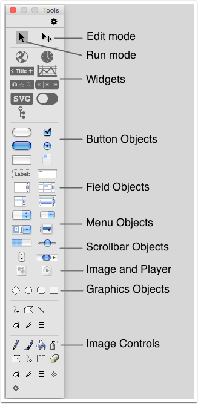
Figure 13 - The Main Tools Palette
| Run mode | Click to enter run mode. When in run mode, objects receive all the normal messages that drive a LiveCode application. For example, clicking on a button in run mode will cause a mouseUp message to be sent to it and the script will run. |
| Edit mode | Click to enter edit mode. When in edit mode, objects do not receive messages when you click on them, and you can move, resize or edit the properties for objects. For more details about the run and Edit mode, see the section The ‘Edit’ and ‘Run’ Mode. |
| Widget objects Button objects Field objects Scrollbar objects Image & Player |
Drag any object within these areas onto an editable stack to create a new object. Double-click an object to create a object of that type in the center of the front most editable stack. For more details on all of these objects, see the section about each object type later in this chapter. |
| Vector Graphics | Press the grey triangle at the bottom right of the Image & Player area to hide and show this section. Click to choose the type of new graphic you want to create. Use the fill bucket to choose the fill color, the fill pencil to choose the line color, the line thickness menu to choose the line thickness, and the optional shape menu to choose preferences specific to the type of graphic selected. Click and drag in an editable stack to create the new graphic. |
| Bitmap graphics | The paint tools allow you to edit bitmap graphics that have been imported into LiveCode or create your own. To use them, create an image object and paint within that area, or modify an existing image. You cannot use the paint tools to edit an image that has its filename property set, as that image data is stored outside LiveCode. For more details on working with images, see the section on Images later in this chapter and the chapter on Working with Media. |
Tip: You can also create objects using the New Control sub-menu in the Object menu, or by typing create [object type] in the Message box. For more information on creating objects using the Message Box, see the section on Building Interfaces Using Scripts, later in this chapter.
To open a system-standard color chooser, double-click on color chooser popup menus at the bottom of the Vector Graphics or Bitmap Graphics sections of the tools palette.
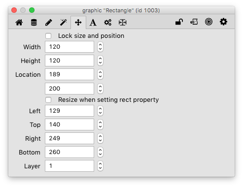
Figure 14 – Size & Position Inspector
| Lock size and position | Locks the object so that its size and position cannot be adjusted interactively with the mouse when in edit mode. This also prevents images, groups and players from automatically resizing to display their entire content whenever the card that they are on is reopened. For more details see the entry for lockLocation in the LiveCode Dictionary. |
| Width & Height | Allows you to set the width and height of the object(s) currently being operated on by the Property Inspector. Objects are resized from their center. For more details, see the width and height properties in the LiveCode Dictionary. |
| Fit Content | Automatically sizes the object large enough to display its content. In the case of buttons, the content is the text and any icon. For images, this is the native width and height of the original image before any scaling. For more details, see the entry for formattedWidth and formattedHeight in the LiveCode Dictionary. |
| Location | Sets the objects position (the center of the object) relative to the top left of the card. |
| Left, Top, Right & Bottom | Sets the position of one of the object’s edges. |
| Layer | Sets the layer of the object. The buttons with arrows allow you to send an object to the back, move an object back one layer, bring an object forward one layer and bring an object to the front. Layer determines which objects are displayed in front or behind others, as well as the object’s number and tabbing order. Note that you cannot relayer objects that are grouped unless you are in edit background mode, or have the relayerGroupedControls set to true. For more details, see the section on Group & Backgrounds. For more details on tabbing order see the section on The Keyboard Focus below. |
Use the Align Objects Inspector to resize objects relative to other objects, to reposition objects and/or to relayer objects.
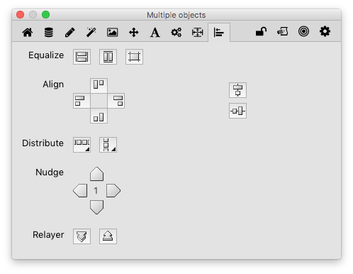
Figure 15 – Align Objects Inspector
To open the Align Objects Inspector, select multiple objects, then open the Inspector and choose Align Objects from the menu at the top of the Inspector. The Align Objects pane will automatically be displayed if you select multiple objects of different types.
Important: The Align Objects Inspector resizes objects relative to each other. Always select the object you want to use as a reference first, then select other objects that you want to make the same as that object next. If you want to distribute objects, select them in the order that you would like them to be distributed.
| Equalize | Make objects the same width, height, or have exactly the same rectangle. |
| Align | Aligns the objects by their left, right, top or bottom edges, or by their horizontal center or vertical center, using the first object selected as a reference. |
| Distribute | Distributes the objects with an equal difference between them, using the order they were selected. ‘First to last’ selected will distribute objects evenly between the edges of the first and last objects selected. ‘Edge to edge’ will distribute the objects so that their edges touch each other exactly. ‘Across card’ will distribute the objects evenly over the entire card area. |
| Nudge | Nudge the selected object the number of pixels specified in the center of the arrows. To change the number of pixels, click on the number. |
| Relayer | ‘First to last selected’ will relayer the objects in the selection in the order they were selected. 'Last to first" will relayer the objects in reverse order. Use these buttons to set the tab order of a set of objects. For more information on the tabbing order, see the section on The Keyboard Focus below. |
The focus is an indication to the user of which control will receive a keystroke. Exactly which objects are capable of receiving the keyboard focus depend on the current operating system, and the properties applied to the control. Edit fields can receive the focus, as can all other objects on Windows and Linux, and many objects on Mac OS.
The order in which the user moves through controls that can receive the keyboard focus is determined by the object’s layer. When a card is opened, LiveCode automatically focuses the first object on the card that is capable of receiving the keyboard focus.
You can turn on the ability of an object to get the keyboard focus by checking the Focus with Keyboard option in the object’s Inspector, or by setting its traversalOn property by script.
On some platforms objects give an indication that they have the focus by displaying a border. You can specify whether a border should be displayed by setting an object’s Show Focus Border option in the Inspector, or setting its showFocusBorder property by script.
In LiveCode, each window is a stack. This includes editable windows, modeless and modal dialog boxes, and palettes, as well as sub-windows available on some operating systems, such as sheets and drawers.
Tip: If you want to make controls within a stack scale and position automatically when you resize the stack, see the section on the Geometry Manager.
This topic discusses the way windows are implemented in LiveCode applications; how to change window appearance; and how to control the behavior of the various window types. This topic does not cover the organization of stacks within a stack file, which is covered in detail in the section Structuring Your Application.
Caution: Do not start your stack name with "rev". Stacks with names starting with "rev" are reserved by the LiveCode development environment.
You create a new stack – which can then be displayed in any number of modes (as described below) – by choosing File -> New Mainstack. You can edit stack properties by choosing Object -> Stack Inspector.
The nature of a stack's window depends on the stack's style property and on what command was used to open the stack. You can either specify the window type when opening the stack, or allow the stack's style property to determine the type of window it is displayed in.
Note: We recommend you specify the mode you want a stack to be opened in as part of the command you use to open the stack, rather than using the style property. This makes it easy to switch a stack between editable mode in the development environment, and for example, a dialog in the runtime environment.
LiveCode windows are usually one of four types: editable or topLevel windows, modal or modeless dialog boxes, or palette windows.
Important: You will normally create a new stack and edit it while it is in editable mode. If you want to create a dialog, create the stack like any other stack. Then when opening it, specify in the script that it should be displayed as a dialog, or a palette, etc. The appropriate commands for doing this are detailed with each type of window below.
You can test out these commands as you work on your window layout and
scripts, using the Message Box (see section of the same name), or
using the window context menu (see Modal Dialog Boxes, below). For
more details on writing scripts in general, see the section on Coding
in LiveCode.
Most windows are editable or topLevel windows, and this is the default mode for LiveCode stacks. If you open a stack using the go command (without specifying a mode), or using the Open Stack menu item, then the stack is displayed as an editable window unless its style property specifies another window type.
An editable window has the appearance and behavior of a standard document window. It can be interleaved with other windows, and you can use any of LiveCode's tools to create, select, move, or delete objects in the stack.
| 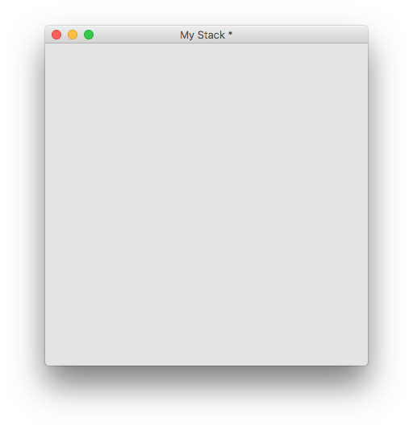 | 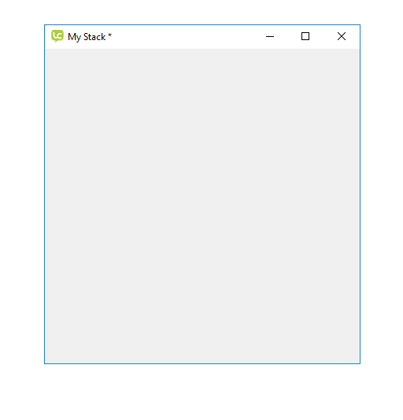 | 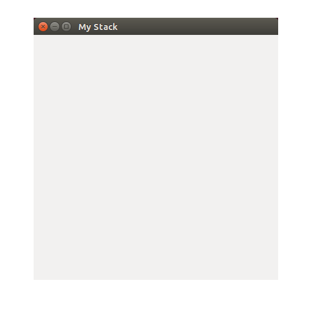 |
| Mac | Windows | Linux |
Figure 16 – Editable Document Windows on Multiple Platforms
To display a stack in an editable window, you use the topLevel or go commands:
topLevel stack "My Stack"
go stack "My Stack" – "topLevel" is the default mode
go stack "My Stack" as topLevel
Stacks whose style property is set to "topLevel" always open as editable windows, regardless of what command you use to open them.
Note: If the stack's cantModify property is set to true, the window retains its standard appearance, but tools other than the Browse tool can no longer be used in it. In other words, every tool behaves like the Browse tool when clicking in an unmodifiable stack's window.
Modeless dialog boxes are similar to editable windows. Like editable windows, they can be interleaved with other windows in the application. Their appearance may differ slightly from the appearance of editable windows, depending on the platform.
| 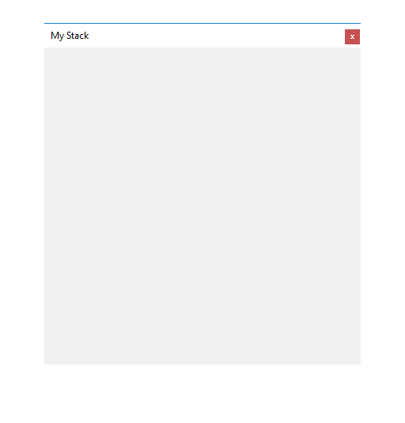 | 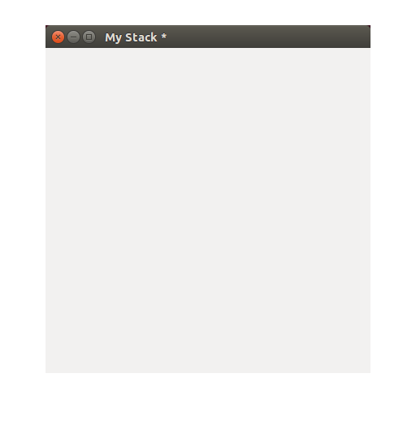 | |
| Mac | Windows | Linux |
Figure 17 – Modeless Dialog Boxes on Multiple Platforms
Like unmodifiable stacks, modeless dialog boxes do not allow use of tools other than the Browse tool. Use modeless dialog boxes in your application for windows such as a Preferences or Find dialog box, that do not require the user to dismiss them before doing another task.
To display a stack in a modeless dialog box, you use the modeless or go commands:
modeless stack "My Stack"
go stack "My Stack" as modeless
Stacks whose style property is set to "modeless" always open as modeless dialog boxes, regardless of what command you use to open them.
A modal dialog box is a window that blocks other actions while the window is displayed. You cannot bring another window in the application to the front until the dialog box is closed, nor can you edit the stack using the tools in the Tools palette. While a modal dialog box is being displayed, the handler that displayed it pauses until the dialog box is closed.
| 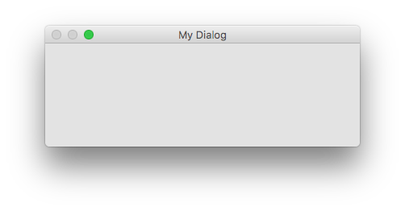 | 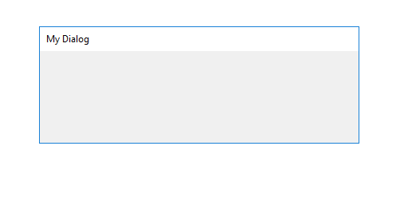 | 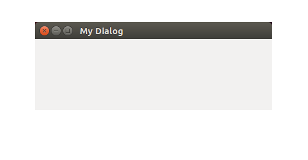 |
| Mac | Windows | Linux |
Figure 18 – Modal Dialog Boxes on Multiple Platforms
Modal dialog boxes do not have a close box. Usually, they contain one or more buttons that close the window when clicked.
Important: If you mistakenly open a modal dialog box without having included a button to close the window, use the contextual-menu shortcut (Control-Shift-Right-click for Unix or Windows, Command-Control-Shift-click for Mac OS) to display a context menu. Choose toplevel to make the stack editable.
To display a stack in a modal dialog box, you use the modal command or go commands:
modal stack "My Stack"
go stack "My Stack" as modal
Stacks whose style property is set to "modal" always open as modal dialog boxes, regardless of what command you use to open them.
A palette has a slightly different appearance, with a narrower title bar than an editable window. Like dialog box windows, a palette does not allow use of tools other than the Browse tool.
| 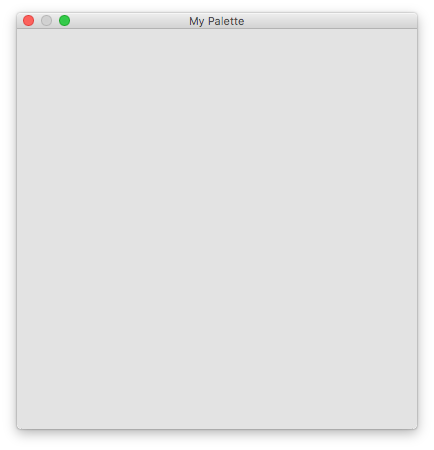 | 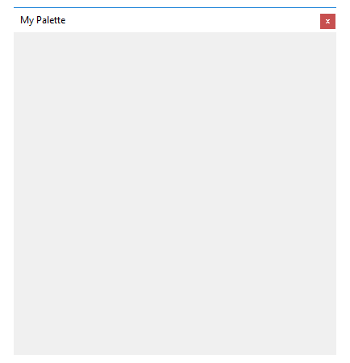 | 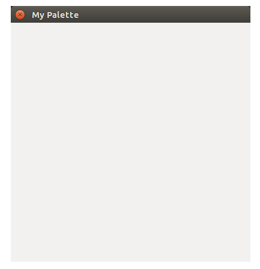 |
| Mac | Windows | Linux |
Figure 19 – Palette Windows on Multiple Platforms
A palette floats in front of any editable windows or modeless dialog boxes that are in the same application. Even when you bring another window to the front, it does not cover any palettes.
Note: On some Linux systems, palettes have the same appearance and behavior as ordinary windows and do not float. On Mac OS X systems, palette windows disappear when their application is in the background and another application is in front.
To display a stack in a palette, you use the palette command or go commands:
palette stack "My Stack"
go stack "My Stack" as palette
Stacks whose style property is set to "palette" always open as palettes, regardless of what command you use to open them.
The ask question dialog is a special type of window that is designed to make it easy to ask the user a question. It includes special syntax for opening the dialog with question text and returning any answer to the script that called it. You can also specify the window title, as well as an icon to be displayed in the window. The font, object positions, button order and icon will automatically change to reflect the operating system. However, if you do require more flexibility than is provided in this dialog, you should create your own modal dialog box instead (see above).
| 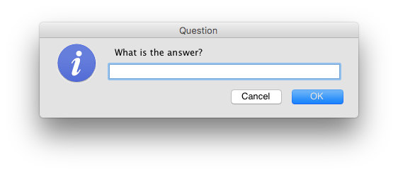 | 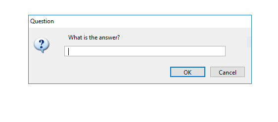 | 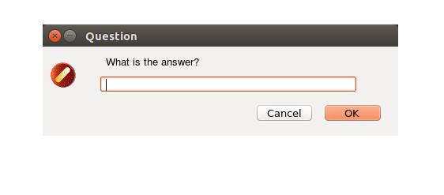 |
| Mac | Windows | Linux |
Figure 20 – Ask Question Dialog Boxes on Multiple Platforms
To display the ask dialog, use the following commands:
ask "What is your name?"
ask question "What is the answer?" titled "Question"
Tip: You can try this example out right now by coping and pasting it into Tools -> Message Box, then pressing return.
The word question specifies the icon, and may be any of question | information | error warning.
To change the miniature application icon shown in the Mac OS X platform picture above, see the entry for gREVAppIcon in the LiveCode Dictionary.
The result is returned in the special variable it.
if it is "Joe" then doSomeThing
For complete details on the syntax, see the ask command in the LiveCode Dictionary.
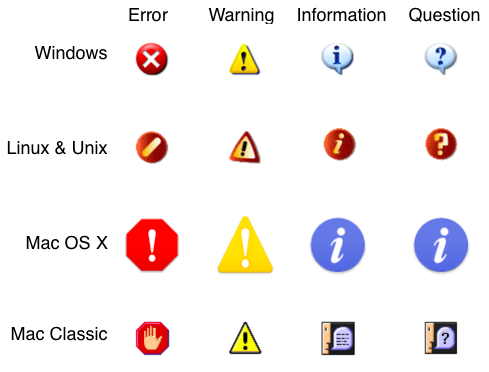
Figure 21 – Icons for Ask and Answer Dialogs on Multiple Platforms
Like the ask dialog box above, the answer dialog is a special dialog that has been designed to make it easy to display information in a dialog on screen and optionally allow the user to make a choice from a list of up to seven choices. The answer command opens the dialog, lets you specify the text and the button choices, and returns the button click to the script that called it. You can also specify the window title, as well as an icon to be displayed in the window. As with the ask dialog, the font, object positions, button order and icon will automatically change to reflect the operating system. However, if you do require more flexibility than is provided in this dialog, you should create your own modal dialog box instead (see above).
| 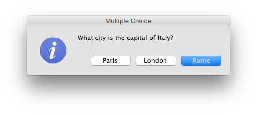 | 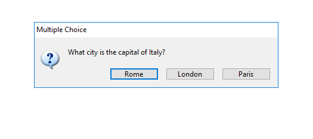 | 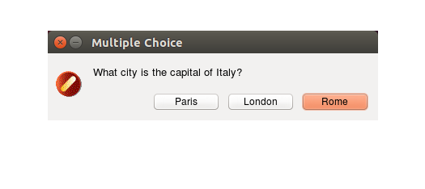 |
| Mac | Windows | Linux |
Figure 22 – Answer Dialogs on Multiple Platforms
answer "Hello World!"
answer question "What city is the capital of Italy?" with \
"Paris" or "London" or "Rome" titled "Multiple Choice"
The result is returned in the special variable it.
if it is "Rome" then
answer information "That was the correct answer."
end if
For complete details on the syntax, see the answer command in the LiveCode Dictionary.
The answer dialog is implemented internally as a stack attached to the LiveCode IDE. For details on customizing the IDE, see the section on Editing the LiveCode User Interface.
Tip: If you're not sure what a stack's name is, you can use the mouseStack function to find out. Enter the following in the Message Box (Tools -> Message Box), then move the mouse pointer over the stack window and press Return:
put the mouseStack
The file selector dialogs allow you to display the system standard dialogs. These dialogs allow the user to select a file or a set of files, select a directory, or specify a name and location to save a file.
The syntax for bringing up the file selector dialogs mirrors the syntax for the alert and question dialogs detailed above. However, unlike these dialogs, the file selector dialogs are displayed using the system standard dialogs where available. The notable exception at the time of this writing is Linux platform, where a built-in dialog is used instead due to more limited OS support. (You can force the other platforms to use this built-in stack based file selector by setting the systemFileSelector global property.)
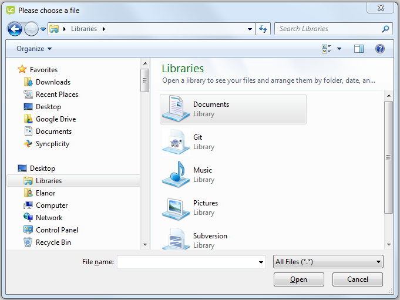
Figure 23 – Answer File dialog for selecting a file
answer file "Select a file:"
answer file "Select an image file:" \
with type "Movies|avi" or type "All Files|"
The file path to the file selected by the user is returned in the special variable it. If the user cancelled the dialog, the special variable it will be empty and "cancel" will be returned by the result function.
For complete details on the syntax, see the answer file with type command in the LiveCode Dictionary.
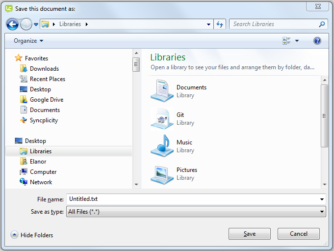
Figure 24 – Ask File dialog for saving a file
ask file "Save this document as:" with "Untitled.txt"
answer file "Select an image file:" \
with type "Text Files|txt" or type "All Files|"
The file path to the file to be saved is returned in the special variable it. If the user cancelled the dialog, the it variable will be empty and cancel will be returned by the result function.
For complete details on the syntax, see the ask file with type in the LiveCode Dictionary.
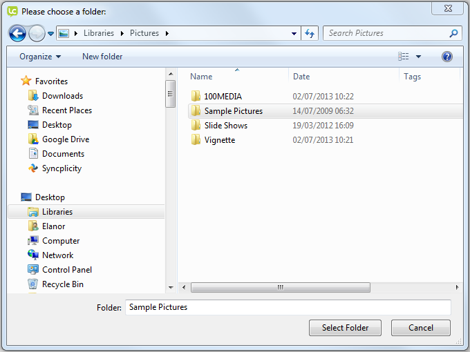
Figure 25 – Answer folder dialog for choosing a directory
answer folder "Please choose a folder:"
answer folder "Please choose a folder:" with "/root/default folder"
The file path to the folder selected by the user is returned in the special variable it. If the user cancelled the dialog, the it variable will be empty and "cancel" information will be returned by the result function.
For complete details on the syntax, see answer folder in the LiveCode Dictionary.
The answer color dialog allows you to display the operating system’s standard color picker dialog.
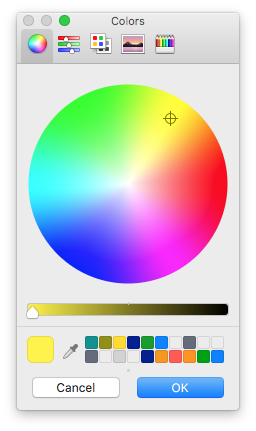
Figure 26 – Answer color dialog for choosing a color
answer color
The color chosen is returned in the special variable it. If the user cancelled the dialog, it will be empty and "cancel" will be returned by the result function.
For complete details on the syntax, see answer color in the LiveCode Dictionary.
The printer dialogs allow you to display the standard printer and page setup dialogs.
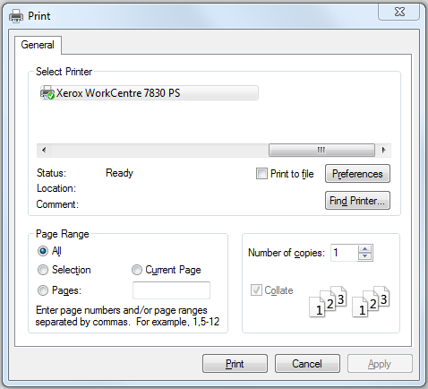
Figure 27 – Answer printer for standard printer dialog
Use the answer printer command to display a standard printer dialog prior to printing. If the user cancels the dialog, "cancel" will be returned by the result function.
Use the Shape option in the Stack Inspector to set a stack’s windowShape property to the transparent, or alpha channel of an image that has been imported together with its alpha channel (i.e. in either PNG or GIF format). This allows you to create a window with "holes" or a window with variable translucency. You can apply a shape to any type of stack, regardless of the mode it is opened, allowing such a window to block as a dialog, float as a palette, etc.
Important: The border and title bar of a stack are not shown if the stack's windowShape is set. This means you will need to provide methods of dragging and closing the window if you want the user to be able to do these tasks.
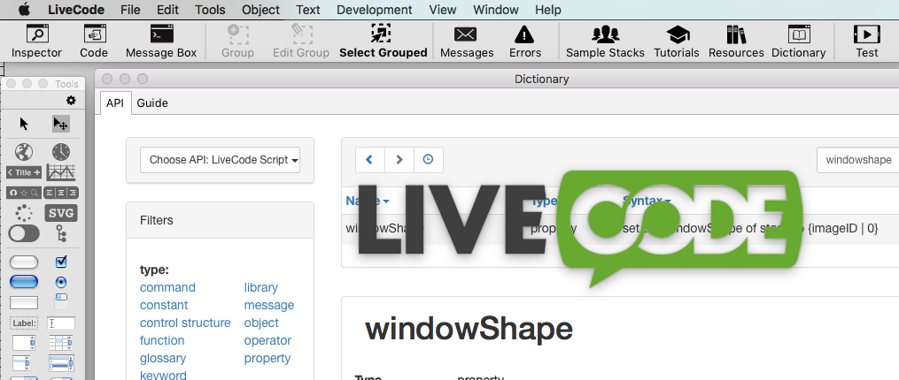
Figure 29 – Window with alpha mask applied
You can change the windowShape property dynamically by script to a series of images to create an animated translucent window.
A system palette is like a palette, except that it floats in front of all windows on the screen, not just the windows in its application. Use system palettes for utilities that you want the user to be able to see and access in every application.

Figure 30 – System Window floating above other applications
To display a stack in a system palette, you turn on the check box in the Stack Inspector "Float Above Everything". For more details on this feature, see the entry for systemWindow in the LiveCode Dictionary.
Using this feature overrides the stack's style or mode.
The system palette style is currently not supported on Linux & Unix.
Note: Usually a menu in a LiveCode application is implemented as a button. We recommend that menus are implemented using buttons, as these will automatically be drawn with the native theme on each platform. For more details, see the section on Menus below
It is also possible to display a stack as a pulldown, popup, or option menu. Stack menus are used when a menu needs to contain something other than just text. For example, a popup menu containing a slider, or an option menu consisting of icons instead of text, can be implemented as a stack menu.
To display the stack menu, you create a button and set its menuName property to the stack's name. When the user clicks the button, the stack is displayed with the behavior of a menu. Internally, the menu is implemented as a window, and you can use the popup, pulldown, or option command to display any stack as one of these menu types.
Stack decorations allow you to specify how the title bar and border of a window will be drawn. You can access the stack decorations options in Object -> Stack Inspector.
Apart from the differences in appearance between different window modes, the appearance and functionality of a window can vary depending on the stack's properties and the platform it is being displayed on.A window's title bar displays the window's title, as well as a close box, minimize box or collapse box, and maximize box or zoom box.

Figure 31 – Window Decorations on Windows and Mac OS X
Note: On Mac OS X, a stack's shadow property controls whether the stack window has a drop shadow. On OS X systems, you can set this property to false to create a window with no shadow.
The properties above can also be set by script, for more details see the decorations property in the LiveCode Dictionary.
While the stack's mode is separate from its decorations, the mode may affect whether these properties have an effect. If the decorations property is set to "default", it displays the appropriate decorations for the current window type on the current platform.
A button is a clickable object that is typically for allowing a user to perform an action by clicking.
| 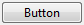 | ||
| 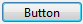 | ||
| Mac | Windows | Linux |
Figure 32 – Button Objects on Multiple Platforms
Check boxes and radio buttons are used to allow the user to make choices. Radio buttons are used when only one option for a set of options may be selected at any time. Check boxes are used where some options may be turned on and others may be off.
Note: LiveCode will automatically enforce the rule of highlighting one radio button at a time if you place the radio buttons together in a group. For more details on groups, see the section on Groups and Backgrounds.
| Mac | Windows | Linux |
Figure 33 – Check Boxes and Radio Buttons on Multiple Platforms
All button objects in LiveCode are highly flexible and customizable. Common settings include the ability to show and hide the border or fill, and to display an icon.
Icons allow you to provide a wide range of functionality. For example you can create a roll over effect by setting a hover icon. Or you can create a custom check box by setting an icon and a highlight icon – doing so will replace the system standard check box and display your icon in each state depending on whether the button has been pressed or depressed.
Figure 34 – Custom Buttons for Multimedia
Important: Button icons are not limited in width or height. They can be animated by using an animated GIF. In fact, an icon can reference any image contained within your LiveCode stack file. Referencing an image in this way saves disk space and allows you to update all icons in your stack by updating a single image. See the chapter Working with Media for more information.
Fields allow you to display text. Fields can optionally allow the user to edit the text. Fields support multiple fonts, styles and colors, images and a subset of basic HTML tags. Fields can be linked to a database using the Database Query Builder or by directly accessing a database with the database library. They can display and render XML using the XML library. List fields allow the user to select one or a set of choices. Table fields allow display of data similar to a spreadsheet. Other types of field can easily be created, including tree views, or any hybrid between these types, with a little scripting. At the time of this writing there is also a 3rd party library available that allows you to host a web browser within an object and control it by script.
Figure 35 – Field Controls
List fields allow you to display a set of choices. Users cannot edit list fields. You can specify whether the user is allowed to make a single selection or multiple selections.
Figure 36 – List Fields
Table fields allow you to display data in cells, and optionally allow the user to edit the cells. Table fields are ideal for displaying basic tabular data. For more complex data display requirements we recommend you use the Data Grid control.
Figure 37 – Table Field
Data Grids allow you to display data in both grid and form modes. You can customize a data grid to include custom layouts that include any other LiveCode object. Data grids can provide a view into a data source, allowing you to display large data sets. For full documentation on using data grids, see the online documentation
Figure 38 – Data Grid
Each stack contains one or more separate screens of controls. Each screen is known as a card. Each card can have an entirely different appearance, or all the cards in a stack can share some or all elements, by using shared groups, known as backgrounds (see below).
Choosing Object -> New Card will create a new card within the current stack. The new card will either be completely blank, or will contain any shared groups from the previous card.
Groups, LiveCode's most versatile object type, are used for several purposes: radio button clusters; menu bars; for creating scrollable object areas within cards; and as backgrounds for displaying sets of objects that are shared between cards. Groups can also be used for creating a simple card and stack database, by holding fields that contain a different record on each card.
A group is a single object that holds a set of objects. Objects are grouped by selecting the controls you want to include in the group, then using the group command or choosing Object –> Group Selected.
Once you've created the group, it becomes an object in its own right. You can select, copy, move, and resize the group, and all the objects in the group come with it. The objects in the group maintain their own identities, and you can add objects to the group or delete them, but the objects are owned by the group instead of the card.
A group has its own properties and its own script. Groups can be any size, can be shown or hidden, and can be moved to any location in the stack window, just like any other control. Like other controls, groups can be layered in any order with the other controls on the card. Groups can also display a border around a set of objects.
Figure 39 – Group of radio buttons with group title and border
Unlike other controls, however, groups can appear on more than one card. You place a group on a card using the place command or the Place Group submenu in the Object menu.
Important: A group that is shared between cards appears at the same location on each card. A change made to the position of a shared group on one card is reflected on all the other cards that share the group.
Both the term group and the term background can be used to refer to groups. The terms are interchangeable in some circumstances and mean different things in others. The differences are explained in more detail below.
In general, the term group refers to groups that are placed on a card, while the term background refers to all the groups in a stack that are available for use as backgrounds (see below). The expression
the number of groups
evaluates to the number of groups on the current card. The expression the number of backgrounds evaluates to the number of background groups in the current stack, including groups that are not placed on the current card.
Tip: When you refer to a group by number, if you use the word group, the number is interpreted as referring to the groups on the referenced card, in order by layer. If you use the word background, the number is interpreted as referring to the groups in the stack, in the order of their creation.
For example, the expression the name of group 1 evaluates to the name of the lowest-layered group on the current card, while the expression the name of background 1 evaluates to the name of the first group that was created in the stack--whether or not that particular group is placed on the current card, or appears on any card at all.
The term background can be also used to refer to the set of cards that share a particular group. The following statement goes to the third card on which the group named "Navigation" is placed:
go card 3 of background "Navigation"
LiveCode supports nested groups (one group containing another). Since a group is itself a control, it can be contained in another group.
Creating a nested group is just like creating a group: select the controls you want to group (including the existing group), then choose Object -> Group Selected. The existing group is now a member of the new group.
To select a group, simply click on one of the objects that is contained within it. This will select the group.
If you want to select an object within the group, instead of the group itself, there are two ways to do so. You can turn on the Select Grouped option on the toolbar or in Edit -> Select Grouped Controls. This causes groups to be ignored when selecting objects, allowing you to select objects inside a group as if the group didn’t exist. You can enter this mode by script by toggling the selectGroupedControls global property.
Alternatively you can go into edit group mode, a special mode that only displays the objects within that group. Select the group, then press Edit Group on the toolbar or choose Object -> Edit Group. When you have finished, choose Object -> Stop Editing Group. You can toggle this mode programmatically by using the commands start editing and stop editing.
Tip: If a group's border has been set, an outline appears at the group's edges. However, clicking within or on the border does not select the group. To select the group, you must click one of its controls.
Once you create a group, you can display it on any or all cards in the stack. First, ensure that the group’s Behave as Background option has been set in the Inspector. Then navigate to the card you want to place the group on and choose Object -> Place Group to place an instance of a particular group on the current card. You can control these features from script by using the backgroundBehavior property and place command.
Note: When you create a new card, if there are any groups on the current card whose Behave as Background has been set, they are automatically placed on the new card. To make it easy for all the cards in a stack to share a single group, create the group on the first card and set this property to true, before you create any other cards.
To remove a group from the current card without deleting it from the stack select the group and choose Object -> Remove Group. The group disappears from the current card, but it's still placed on any other cards that share the group. You can remove a group by script using the remove command.
Tip: You can use the start editing command from the Message Box to edit a group that has not been placed on any card. Since the group is not on any card, you must refer to it using the term "background" instead of the term "group".
You can completely delete a group in the same way as you delete any other object, by selecting the group and choose Edit -> Clear or pressing backspace.
Important: Deleting a background group removes it from all the cards it appears on, and from the stack itself.
To dissolve a group back into its component controls, select the group and choose Object -> Ungroup. You can ungroup a group by script using the ungroup command. Ungrouping deletes the group object and its properties (including its script) from the stack, but does not delete the controls in it. Instead, they become card controls of the current card. The controls disappear from all other cards the group is on.
Note: If you ungroup a group, then select the controls and regroup them before leaving the current card, the group is restored as it was. However, leaving the current card makes the ungrouping permanent and deletes the group from all other cards it was on.
For details on how groups and backgrounds fit into the Message Path, see the section on Groups, Backgrounds & The Message Path, below.
LiveCode supports a wide range of media formats, allowing you to produce rich media applications. The image object allows you to import or reference images, manipulate images by script or interactively with the paint tools, and save them out in different formats with variable compression options. Support extends to alpha channeled PNG images and animated GIF images. Images can be imported and reused within a stack to create custom or interactive interface elements. To learn how to work with these objects in a script, see the section on Working with Media.
Image formats supported include GIF, JPEG, PNG, BMP, XWD, XBM, XPM, or PBM, PGM, or PPM files. On Mac OS systems, PICT files can also be imported (but they cannot be displayed on Unix or Windows systems). For full details on each of these formats, see the section on Working with Media.
You can import images using File -> Import as Control -> Image File. You can reference an image using File -> New Referenced Control -> Image file.
Paint tools can only be used on images that have been imported as a control. See the section on Using the Paint Tools for details on how to use the paint tools.
Figure 40 – Image, Graphic and Player objects
Vector graphics can also be created and manipulated with the graphic tools and by script. LiveCode supports paths with variable fills, gradients, blended and antialiased graphics. At time of this writing there is also a 3rd party library that allows the import and export of SVG format graphics. Use graphic objects to create interactive interfaces, graphs, charts or games.
Use the player object to display and interact with any media formats supported by AVFoundation on Mac OS X and DirectShow on Windows. LiveCode allows you to turn on and off tracks within a movie and set callback messages that trigger scripts at specific points in the movie, and stream movies from a server. At time of this writing there is also a 3rd party library that allows you to edit and save movies by script.
The Audio Clip & Video Clip objects allow you to embed audio or video clip data within a stack. They do not have any visual representation and can be accessed by script or in the Application Browser. Players, Audio & Video clips are covered in their respective sections within the chapter on Working with Media.
Menus are used to display a list of choices. The pulldown menu displays a standard pulldown menu, and can be automatically inserted into the main menu bar on Mac OS systems. The option menu allows a choice from a list. The combobox allows the user to type an option or choose from a list. Popup menus can be displayed underneath the cursor and used to provide context sensitive options anywhere in your application. For more information on working with pulldown menus within the main menu bar, see the section on the Menu Builder below.
Menu contents can be defined using a list of item names and special characters to indicate where shortcuts and checkmarks should be placed. This is the most common type of menu and is known as a contents menu. LiveCode will automatically draw menus defined as contents menus using the native system look on each platform. When you choose an item from a contents menu, LiveCode will send a menuPick message along with the name of the item chosen.
Alternatively, menus may be constructed from a stack panel, giving you complete control over the menu contents and allowing the display of any object type of functionality. When you choose an item from a stack panel menu, the individual object within the menu will receive a mouseUp message. Note that panel menus cannot be displayed within the main menu bar on Mac OS systems.
For more details on working with and scripting menus in general, see the section Working with Menus in the Programming a User Interface guide.
| Mac | Windows | Linux |
Figure 41 – Menu Controls
The cascade menu is a special type of control that is only used when building a stack panel menu. Sub-menu items can be created in list-based content menus without using this object.
Figure 42 – Tab Menu on Windows
The tabbed panel is a type of menu in LiveCode. You can specify a list
of tabs to be displayed and receive a menuPickmessage when the user
clicks on a tab in the same way as other menus. There are two common
techniques for implementing a tabbed interface: group the objects for
each tab together and show or hide the appropriate group when you change
tab; or place the tab object into a group which is then placed as a
background on multiple cards.
Scroll bars can be used as a progress bar to display a value, a slider to allow the user to choose a value, or to scroll objects. (Note that you don’t need to use a scrollbar object with fields or groups as these can display a built-in scroll bar.) Sliders and scrollbars can be displayed both horizontally and vertically – to display vertically, resize so that the height is greater than the width.
Figure 43 – Scrollbars
The menu builder allows you to create and edit a standard menu bar that will work correctly regardless of the platform you intend to deploy on. On Windows and Unix, menus built with the Menu Builder will appear in the top of the window. On Mac OS they will be displayed in the main menu bar. It is also possible to generate a menu bar by script. For more details, see the section on Programming a User Interface.
Choose Tools -> Menu Builder to open the Menu Builder.

Figure 44 – Menu Builder
| Preview | This option allows you to preview your menu bar in the main menu bar. It only applies on Mac OS systems where the option Set as Menu Bar on Mac OS has been turned on. > Important: To bring back the LiveCode development menu bar when working with a stack that has this option turned on, click on a LiveCode IDE window such as the Tool bar. |
| Menu bar settings | This area specifies the main settings for your menu bar. Use the New button to create a new menu bar in the current top most editable stack. Enter the name for your menu bar in the text area. Delete will permanently delete your menu bar. Use the Edit button to load an existing menu bar from the top most editable stack to edit in the area below. |
| Menu edit area | Select a menu to work on from the scrolling list. At a minimum your application should have a File, Edit and Help menu. These menus are created for you automatically when you create a new menu bar. To create a new menu, move the orange divider bar to the position in the menu bar you want to create the new menu, and press New Menu. Disable the currently selected menu by checking Disabled. Choose the keyboard shortcut (the portion of the name that is underlined), using the Mnemonic popup menu (Windows, Linux & Unix only). To move a menu in the list, select it then press the up or down arrows (to the right of the name area). |
| Menu content area | Select a menu item to work on from the scrolling list. To create a new menu item, move the orange divider bar to the position in the menu bar you want to create the new menu, and press New Item. Disable the currently selected item checking Disabled. Choose the keyboard shortcut (the portion of the name that is underlined, for use when the menu is open), using the Mnemonic popup menu (Windows, Linux & Unix only). To move a menu item up or down the list, select it then click the up or down arrows (to the right of the name area). To move items into a submenu, click the Right arrow, or click the Left arrow to move a submenu item back into the main menu bar. To insert a divider, position the orange divider bar where you want the divider, the click the blue divider button (top right). To make the menu item a Checkbox or Diamond option, choose the appropriate option from the Mark popup menu. To create a control key shortcut for the item, click the Shortcut check box and enter the letter you want to use for the shortcut. To understand the symbols that are created next to the menu items, see the section on Menu Bars within the chapter on Programming a User Interface. |
| Scripting | Edit Script opens the Code Editor for the currently selected menu. Auto Script places a blank script within the currently selected button with spaces to insert actions for each of the menu items within that item. We recommend you press Auto Script before pressing Edit Script when you create a menu. |
Use the Geometry Manager to specify how objects should be scaled and positioned when the user resizes the window.
Figure 45 – The Geometry Manager
| Scale or Position Selector | Choose whether you want the control to be scaled or positioned when the stack is resized. Scaling will change the dimensions of the control as the stack resizes. Positioning will move the control, it does not change its dimensions. Note that it is possible to scale an object in the horizontal plane and have it position in the vertical. Select Scale then set the options for one axis in the Linking area. Then select Position and set the options for the other axis. If you set options in both the Scale and Position modes for both axis, the Scaling options will be ignored. |
| Linking area | Use the linking area to specify the relationship between the control and the window, or other controls as the stack is resized. In Scaling mode you can link each edge of the object to the window or another object. In positioning mode, you can only link the X and Y axis of an object. Click the gray bars to create a link. A single click results in an absolute link, a second click will create a relative link. An absolute link will keep the object the current number of pixels away from what it is being linked to. For example, if you link the right edge to the edge of the window and the edge is currently 10 pixels away from the edge of the window, whenever the stack is resized the edge will remain exactly 10 pixels away. However if you use a relative link the distance will be calculated as a percentage of the total width of the card. The object will remain the same percentage away from the edge of the card, the exact number of pixels will vary. When linking to another control, be sure to link to a control that is moved relative to the window, or by a script (e.g. in a resizeStackhandler).When using the Geometry Manager with an existing resizeStackhandler, be sure to pass the resizeStackmessage, otherwise the Geometry Manager will not be able to take effect.To force the Geometry to manually update, call revUpdateGeometry. > Tip: You can use the Geometry Manager to scale objects with a "divider" bar. Create and script the bar to move, then link the edges of the controls to it, then call revUpdateGeometry each time it moves to have the objects scale automatically. |
| Clipping settings | Turn on Prevent Object Clipping Text to prevent the control getting too small to display its label when the window is resized. If the control is a field, you can also turn on the option to display scroll bars if the text within the field does not fit. |
| Limit settings | Allows you to set the minimum and maximum possible widths and heights for the object. |
| Remove All | Removes all Geometry settings from the control. Use this option if the settings you have applied do not give the desired effect and you want to start over. |
If you are creating a simple utility for yourself, a handful of other people, or as a research project, the design of the interface is less important. However, if you are creating software for a wide group of end users, you should take time to carefully design the user interface. As computer software has become more mature over the past couple of decades, user expectations of what their software experience should be have increased. Increasingly, users expect clear, uncluttered interfaces which are visually appealing. Getting this right is part art and part science. It is beyond the scope of this manual to give detailed instruction on this topic. There are many good books and resources devoted to this evolving area. However we thought it would be useful to give you our top 10 tips for good user interface design.
Don't use three buttons where one would do. The fewer choices a user has to make the easier your software will be to learn.
Good design supports whatever you are trying to communicate.
Providing preferences is great for power users. Just remember that the majority of your users will never adjust the defaults. So focus on getting the default behaviors right before you start to add preferences.
A clean consistent layout helps to convey a feeling of professionalism and make your software useable. If you have used a button that is 20 pixels wide in one part of your interface then use the same size of button elsewhere. Line your objects up carefully.
Consider what screen resolution you are designing for and whether or not you want your interface to be resizable early on. This decision will have a big impact on your design.
If you program performs a complex task with many options, consider creating a wizard style interface which guides the user step by step through the task. That way they are never faced with a screen covered with dozens of options and no idea what to do next.
Bring in a group of people and watch them use the program. Don't interfere or help them out, just get them going and take notes. If you don't have a budget for expensive user testing labs, this process can be as simple as gathering a group of students and offering them free pizza. You'll get a ton of useful feedback that will really help make your program easy to use.
The various types of widget and control type available have built up a meaning for users over years of use. Don't use something that has a well understood function to perform a different sort of task. If you need a widget that does something new, build something new.
If you're producing a custom skin for your application, a good rule of thumb is either make it entirely custom or use standard OS widgets. An OS native button can look very out of place in the middle of a carefully designed custom skin.
Each of the platforms that LiveCode supports has its own set of User Interface Guidelines. We recommend you take time to familiarize yourself with them.
Apple Human Interface Guidelines:
Windows Vista User Experience Guidelines:
http://msdn2.microsoft.com/en-us/library/aa511258.aspx
GNOME Human Interface Guidelines 2.0:
http://library.gnome.org/devel/hig-book/stable/
KDE Human Interface Guidelines:
http://wiki.openusability.org/guidelines/index.php/Main_Page
Writing code is how you give your application functionality. Writing the right code means your application will do what you want it to do. Fortunately, LiveCode’s built in high level language, makes this task easy. The English-like syntax is easy to read and write. This chapter walks you through writing LiveCode.
Every object in LiveCode can contain a script, which tells it what to do. You edit the script of an object using the Code Editor (see The Code Editor). A script is organized into a set of individual message handlers, each one of which can respond to a different event (see Messages) or contain a specific piece of functionality. Scripts can send messages to each other. In a well organized application, a script will regularly pass data between different types of message handlers which have been grouped and organized to deliver functionality, with a minimum amount of duplication. A script can contain sections of code that is commented – remarks that are intended for a human to read and are not executed. Technically a script is simply another object property, so one script can set another – within certain limits.
A handler is a complete section of code. Each handler can be executed independently. There are four types of handler: commands (message handlers), functions, getProp handlers and setProp handlers.
Each message handler begins with the on control structure followed by the name of the message that this handler responds to. The handler ends with the end control structure and the name of the message. Message handlers look like this:
on mouseUp
beep
end mouseUp
A message handler is executed when the object whose script contains the handler receives the message. This example handler responds to the mouseUp message (see Messages).
Each function handler begins with the function control structure followed by the name of the function that this handler computes. The handler ends with the end control structure and the name of the function. Function handlers are typically called by another handler and return a value using the return control structure. Function handlers look like this:
function currentDay
return item 1 of the long date
end currentDay
A function handler is executed when a handler in the same script (or one in an object lower in the message hierarchy) calls the function. This example handler returns today's name.
Each getProp handler begins with the getProp control structure followed by the name of the custom property that this handler corresponds to. The handler ends with the end control structure and the name of the property. getProp handlers look like this:
getProp myCustomProperty
return the scroll of me + 20
end myCustomProperty
A getProp handler is executed whenever the value of the
corresponding custom property is requested by a LiveCode statement. You
can write a getProphandler for any custom property of the object or
another object lower in the message hierarchy. For more information, see
the section on Custom Properties.
Each setProp handler begins with the setProp control structure followed by the name of the custom property that this handler corresponds to. The handler ends with the end control structure and the name of the property. setProp handlers look like this:
setProp myCustomProperty newSetting
set the hilite of me to true
pass myCustomProperty
end myCustomProperty
A setProp handler is executed whenever the value of the corresponding custom property is changed by the set command. You can write a setProp handler for any custom property of the object or another object lower in the object hierarchy. For more information, see the section on Custom Properties.
Comments are remarks that are intended for a human to read and are not executed. For some recommendations on what sort of comments to include and when, see the section on Good Design Recommendations.Comments can be placed either in a handler, or outside any handler.
Any line (or portion of a line) that starts with two dashes (**--**) or a hash mark (**#**) is a comment. Placing these characters at the beginning of a line is called "commenting out" the line.
on mouseUp -- this part is a comment
beep
-- and this is a comment too
end mouseUp
You can temporarily remove a statement, or even an entire handler, by commenting it out. To comment out several lines at once, select them and choose Script -> Comment.
Since comments are not executed, you can place them anywhere in a script--inside a handler or outside all handlers.
Comments that start with -- or ## only extend to the end of the line. To create a multiple-line comment, or block comment, surround it with /\* and */ instead:
on openCard
/* This is a multiple-line comment that might
contain extensive information about this handler,
such as the author's name, a description, or the
date the handler was last changed. */
show image "My Image"
pass openCard /* You can also make one-line comments */
end openCard
Block comments are handy when you want to temporarily remove a section of code while debugging a handler. You can place the characters "/*" at the start of the section, and "*/" at the end, to prevent the section from being executed.
A script is compiled when you change the script either by clicking Apply in the Code Editor (or, if altering a script from another script, using the set command). During compilation, the entire script is analyzed.
If a compile error is found when a script is being compiled, the entire script is unavailable for execution until the error is corrected and the script is re-compiled. This applies only to compile errors. If an execution error occurs during the execution of a handler, it does not affect the ability to use other handlers in the same script. For more information on dealing with errors, see the section on Debugging.
You cannot change a script while a handler in it is executing, because what is executed is the compiled version, not the text in the script property.
Each object has a script, which can be empty or can contain one or more LiveCode handlers. You change a script using the Code Editor, or by setting the object's script property.
A script can contain four kinds of handlers: commands, function handlers, setProp handlers, and getProp handlers.
A comment is a part of the script that is not executed. Comments start with -- or #.
If a script contains a compile error, none of its handlers can be used until the error is fixed.
LiveCode is based upon events. Every action a script takes is triggered by an event, which is sent in the form of a message.
Messages are sent by events. Events include user actions (such as typing a key or clicking the mouse button) and program actions (such as completing a file download or quitting the application). LiveCode watches for events and sends a message to the appropriate object when an event occurs.
Note: When a tool other than the Browse tool is active, the development environment traps the built-in messages that are normally sent when clicking (such as mouseDown and mouseUp). This is so that, for example, you can use the Pointer tool to select and move a button without triggering its mouseUp handler.
These messages are referred to as built-in messages, and include mouseDown, mouseUp, keyDown, openCard, and all the other messages described in the LiveCode Dictionary.
LiveCode also sends a message whenever a handler executes a custom command (see Sending Messages). However, built-in commands are executed directly by the engine and don't result in sending a message. Similarly, LiveCode sends a function call whenever a handler calls a custom function, a setProp trigger whenever a handler sets a custom property, and a getProp call whenever a handler gets the value of a custom property.
To respond to a message, you write a message handler with the same name as the message. For example, to respond to a keyDown message sent to a field (which is sent when the user presses a key while the insertion point is in the field), place a keyDown handler in the field's script:
on keyDown theKey -- responds to keyDown message
if theKey is a number then beep
end keyDown
The message path is the set of rules that determine which objects, in which order, have the opportunity to respond to a message. The message path is based on the object hierarchy.
Each LiveCode object is part of another object, of a different object type. For example, each card is part of a stack, each grouped control is part of a group, and so on. This object hierarchy defines the ownership and inheritance relationship between objects.
Font, color and pattern properties are inherited from the object’s owner if they are not set. This means that if you set the textFont of a stack, all the objects within that stack that do not have their textFont property set will use that text font.
When a message is sent to an object, it is often handled directly by a message handler in that object. However if no handler is present, the message will continue along a path until it finds a message handler that can respond to it. This makes it possible to group similar functionality together at different levels within your application. This behavior applies both to event messages sent as a result of a user action, and custom messages sent by script. It is therefore possible to write libraries of common functions.
The object hierarchy is closely related to the path that a message travels on. In most cases, when an object passes a message on, the message goes to the object's owner in the object hierarchy.
The Message Path is detailed in the figure below.
Figure 48 – The Message Path
For example, suppose the user clicks a button in a main stack, causing LiveCode to send a mouseUp message to the button. If the button's script does not contain a handler for the mouseUp message, the message is passed along to the card the button is on. If the card's script contains a mouseUp handler, the handler is executed. But if the card does not handle the mouseUp message, it is passed on to the card's stack. If the stack script contains a mouseUp handler, the handler is executed. But if the stack does not handle the mouseUp message, it is passed on to the engine.
The engine is the end of the message path, and if a message reaches it, the engine takes any default action (e.g. inserting a character into a field or highlighting a button), then throws the message away.
If a message corresponding to a custom command or a custom function call reaches the end of the message path without finding a handler, instead of being thrown away, it causes an execution error.
Note: In order to be considered a background (as per the Message Path diagram above), a group must have its backgroundBehavior property is set to true.
If a stack's dynamicPaths property is set to true, message handlers in that stack use HyperCard's dynamic path behavior: if a handler uses the go or find command to go to a card other than the original card, that destination card's message path is inserted into the message path as long as the handler is on that card. The dynamicPaths property is provided for compatibility with imported HyperCard stacks, and is normally set to false, but you may encounter this behavior when working with a stack that was originally created in HyperCard.
The object that a message was originally sent to is called the message's target. You can get the target from within any handler in the message path by using the target function.
Tip: To get the name of the object whose script is currently executing, use the me keyword.
For example, if you click a button (causing a mouseUp message to be sent), and the button's script contains a mouseUp handler, then the target function returns the button's name. However, if the button doesn't handle the mouseUp message, it's passed to the card, and if the card has a mouseUp handler, it is executed in response to the message. In this case, the card's script is executing, but the target is not the card--it's the button that was originally clicked, because LiveCode sent the mouseUpmessage to the button.
If two different objects in the message path each have a handler with the same name, the message is handled by the first object that receives it and has a handler for it.
For example, suppose that a button's script includes a mouseUp handler, and so does the stack script. If you click the button, a mouseUp message is sent to the button. Because the button's script has a mouseUp handler, the button handles the message, and it isn't passed any further. The message is never sent to the stack script, so for this click event, the stack script's mouseUp handler is not executed.
Note: If an object's script has more than one handler with the same name, the first one is executed when the object receives the corresponding message. Other handlers in the same object's script with the same name are never executed.
When an object receives a message and a handler for that message is found, the handler is executed. Normally, a message that's been handled does not go any further along the message path. Its purpose having been served, it disappears. Such a message is said to have been trapped by the handler.
If you want to prevent a message from being passed further along the message path, but don't want to do anything with it, an empty handler for the message will block it from being passed on. This example prevents the mouseDown message from being acted on by the object the empty handler is in, as well as any objects below it in the object hierarchy:
on mouseDown
end mouseDown
You can use the same technique to block custom function calls, setProp triggers, and getProp calls.
You can block system messages – for example those sent when you navigate to another card – from being sent while a handler is executing by setting the lockMessages property to true.
For example, if the handler opens another stack, LiveCode normally sends openCard and openStack messages to the stack. If the stack contains handlers for these messages that would cause unwanted behavior during this operation, you can use the lockmessages command before going to the stack in order to temporarily block these messages. When the handler finishes executing, the lockMessages property is automatically reset to its default value of false, and normal sending of messages resumes.
Tip: To block navigation messages while testing or debugging a stack, press Suppress Messages on the toolbar or choose Development -> Suppress Messages.
To let a message pass further along the message path, use the pass control structure. The pass control structure stops the current handler and sends the message on to the next object in the message path, just as though the object hadn't contained a handler for the message:
on openCard
doSpecialSetupForThisCard
pass openCard -- let stack get the message too
end openCard
Some built-in messages, such as keyDown, trigger an action, so trapping the message prevents the action from being performed at all. The following example passes the keyDown message only if the character typed is a number:
on keyDown theKey
if theKey is a number then pass keyDown
end keyDown
If you place this handler in a field's script, it allows the user to enter numbers, but any other keystrokes are trapped by the keyDown handler and not allowed to pass.
A similar principle applies to setProp triggers. If a setProp handler does not pass the setProp trigger, the custom property is not set.
As you can see from the diagram above a group's position in the message path depends on whether the "Behave as Background" check box has been set (by script or using the backgroundBehavior property).
If background behavior is false, the group is in the message path for all controls it owns, but is not in the message path of any other object.
If the background behavior is true, the group is also in the message path for any cards it is placed on. If you send a message to a card control, the message passes through the control, then the card, then any background groups on the card in order of number, then the stack.
Since a group owns any controls that are part of the group, if you send a message to a control within a group, the group is in the message path for its own controls, regardless of whether it’s background behavior is true or false. If a group has already received a message because it was originally sent to one of the controls in the group, the message is not sent through the group again after the card has handled it.
Tip: If you want a handler in a group's script to affect only the objects in the group, place the following statement at the beginning of the handler:
if the owner of the target is not me then pass message.
This filters out any objects that are not part of the group.
You use commands and functions to perform the actions of your application. Commands instruct the application to do something – such as play a movie, display a window, or change a property. Functions compute a value – different functions might add a column of numbers, or get the fifteenth line of a certain file, or find out whether a key is being pressed.
LiveCode has over one hundred and fifty built-in commands, and over two hundred built-in functions, all of which are documented in the LiveCode Dictionary.
A command is an instruction to LiveCode to do something. A command is placed at the start of a statement (either the start of a line or after a control structure such as "then"). The command is followed by any parameters that specify the details of what the command is to do.
Here are some examples of how built-in commands are used in statements:
go next card -- go command
beep --beep command
set the hilite of me to true-- set command
A function call is a request to LiveCode for information. A function is stated using the name of the function, followed by opening and closing brackets that may contain any parameters that specify the details of what the function is to act on.
When you use a function in a statement, LiveCode calls the function to compute the specified information, then substitutes that information in the script as if the script had originally written that information in place of the function call. The information returned can therefore be put into a variable or other container by using the put command in front of a function.
Here's an example of how a function is used:
put round(22.3) into field "Number"
When this statement is executed, LiveCode calls the round function. When you round off 22.3, the resulting number is 22, so the statement puts the number 22 into the field.
The number you're rounding off is placed in parentheses after the round function's name. This number is called the function's parameter. A function can have one parameter, or none, or several. The parameters are enclosed in parentheses and, if there's more than one, they're separated with commas. Here are some examples:
put date() into myVariable -- date function, no parameters
put length("hello") into me -- length function, 1 parameter
get average(10,2,4) -- average function, 3 parameters
Important: A function call, by itself, is not a complete statement. You need to use a function call in conjunction with a command or control structure. (In the first example above, the round function is used with the put command.)
If a built-in function has no parameters or one parameter, it can be written in a different form, with no parentheses:
put the date into myVariable -- date function
put the length of "hello" into me -- length function
If the function has no parameters, this form is written as the functionName. If it has one parameter, this form is written as the functionName of parameter.
The "the" form works the same way as the "()" form shown above, and you can use the two forms interchangeably for built-in functions with fewer than two parameters. The LiveCode Dictionary entry for each built-in function shows how to write both forms.
You can use the "the" form for built-in functions, but not for custom functions that you write. Writing custom functions is discussed later.
You use custom commands and custom functions the same way as any other command or function.
You can execute a custom command simply by typing the name of the command you want to send.
myCommand
You respond to a custom command's message in the same way, by writing a message handler with the name of the command:
on myCommand -- a custom command
beep 3
go next card
add 1 to field "Card Number"
end myCommand
If you don't specify an object, the message is sent to the object whose script is being executed, and then passes up the message hierarchy as normal.
Like a built-in command, a custom command is an instruction to LiveCode to do something. You can include parameters with a custom command by passing them after the name:
checkForConnection "ftp://ftp.example.org"
makePrefsFile fileLoc,field "Preferences"
Built-in commands can have very flexible syntax:
go to card 3 of stack "Dialogs" as modal
group image "Help Icon" and field "Help Text"
hide button ID 22 with visual effect dissolve very fast
However, the syntax of custom commands is more limited. A custom command can have several parameters, and if there is more than one, they are separated by commas:
libURLDownloadToFile myFile,newPath,"downloadComplete"
revExecuteSQL myDatabaseID,field "Query","\*b" & "myvar"
But custom commands cannot use words like "and" and "to" to join parts of the command together, the way built-in commands can. Because of this, custom commands cannot be as English-like as built-in commands can be.
When you use the custom function "fileHeader" in a statement, the function handler is executed, and the function call is replaced by the value in the return statement. This example shows how the function can be used:
put fileHeader(it) into myFileHeaderVar
And the corresponding custom function:
function fileHeader theFile
put char 1 to 8 of URL ("file:" & theFile) into tempVar
put binaryDecode("h\*",tempVar) into tempVar
return tempVar
end fileHeader
Like a built-in function or library function, a custom function call is a request for information. Here are a few examples showing the use of made-up custom functions:
get formattedPath("/Disk/Folder/File.txt")
put summaryText(field "Input") into field "Summary"
if handlerNames(myScript, "getProp") is empty then beep
Custom functions don't have a "the" form, and are always written with parentheses following the function name. If the function has parameters, they are placed inside the parentheses, separated by commas. If the function doesn't have parameters, the parentheses are empty.
A value that you pass from one handler to another is called a parameter.
In the example below, the following statement sends the "alertUser" message with a parameter:
alertUser "You clicked a button!"
The parameter "You clicked a button!" is passed to the "alertUser" handler, which accepts the parameter and places it in a parameter variable called "theMessage". The "alertUser" handler can then use the parameter in its statements:
on alertUser theMessage
beep
answer theMessage -- uses the parameter "theMessage"
end alertUser
If a statement passes more than one parameter, the parameters are separated by commas. The following example has two parameters, "theMessage" and "numberOfBeeps":
on seriouslyBugUser theMessage,numberOfBeeps
beep numberOfBeeps
answer theMessage
end seriouslyBugUser
To use this custom command, you call it like this:
seriouslyBugUser "Hello",5
When the "seriouslyBugUser" handler is executed with the statement above, the theMessage parameter is "Hello", and the numberOfBeeps parameter is 5.
In the example above, "theMessage" and "numberOfBeeps" are the parameter variables. You declare parameter variables in the first line of a handler. When the handler begins executing, the values you passed are placed in the parameter variables. You can use parameter variables the same way as ordinary variables: you can put data into them, use them in expressions, and so on.
Parameter variables are local variables, so they go out of existence as soon as the handler stops executing.
You can give a parameter any name that's a legal variable name. The names of variables must consist of a single word and may contain any combination of letters, digits, and underscores (_). The first character must be either a letter or an underscore.
It is not the name, but the order of parameters that is significant.
A handler can have any number of parameter variables regardless of the number of parameters passed to it. If there are more parameter variables than there are values to put in them, the remaining parameter variables are left empty. Consider the following handler, which has three parameter variables:
on processOrder itemName,itemSize,numberOfItems
put itemName into field "Name"
put itemSize into field "Size"
if numberOfItems is empty then put 1 into field "Number"
else put numberOfItems into field "Number"
end processOrder
The following statement places an order for one sweater:
processOrder "sweater","large"
The statement only passes two parameters, while the "processOrder" handler has three parameter variables, so the third parameter variable, "numberOfItems", is empty. Because the handler provides for the possibility that "numberOfItems" is empty, you can pass either two or three parameters to this handler.
To use a default value for a parameter, you check whether the parameter is empty. If it is, then no value has been passed, and you can simply put the desired default into the parameter, as in the following example:
logData theData,theFilePath
if theFilePath is empty then
put "logfile" into theFilePath
end if
put theData into URL ("file:" & theFilePath)
end logData
The "logData" handler puts data into a file, whose name and location you specify in the second parameter. If you only provide one parameter, the handler uses the filename "logfile" as the default value, and logs the data to that file:
logData field 1,"/Disk/Folder/data.txt" *-- specifies a file*
logData myVariable-- doesn't specify a file, uses "logfile"
The first statement above specifies the second parameter, so it doesn't use the default value. The second statement only specifies one parameter, so the data will be placed in "logfile" by default.
If a statement passes more parameters than the receiving handler has parameter variables to hold them, the receiving handler can access the extra parameters with the param function:
function product firstFactor,secondFactor
put firstFactor \* secondFactor into theProduct
if the paramCount \> 2 then
repeat with x = 3 to the paramCount
multiply theProduct by param(x)
end repeat
end if
return theProduct
end product
The function above assumes that two parameters will be passed to be multiplied, but can multiply more numbers by using the param function to access parameters beyond the first two. The following statement uses the "product" custom function above to multiply four numbers together:
answer product(22,10,3,7)
When the "product" handler executes, the first two parameters – 22 and
10 – are placed in the parameter variables "firstFactor" and
"secondFactor". The third parameter, 3, is accessed with the expression
param(3), and the fourth parameter, 7, is accessed with the expression
param(4).
Normally, if you pass a variable name as a parameter, that variable is not changed by anything the called handler does. This is because the variable itself is not passed, only its contents. Passing parameters in this way is called "passing by value" because the variable's value--not the variable itself--is what is passed.
If the name of a parameter variable is preceded with the @ character, that parameter's value is a variable name, rather than the value in the variable. Changing the parameter variable in the called handler changes the value of the variable in the calling handler. This way of passing parameters is called "passing by reference", because you pass a reference to the variable itself instead of just its value.
For example, the following handler takes a parameter and adds 1 to it:
on setVariable @incomingVar
add 1 to incomingVar
end setVariable
The following handler calls the "setVariable" handler above:
on mouseUp
put 8 into someVariable
setVariable someVariable*-- call by reference*
answer "someVariable is now:" && someVariable
end mouseUp
Executing this mouseUp handler displays a dialog box that says "someVariable is now: 9". This is because, since "someVariable" was passed by reference to the "setVariable" handler, its value was changed when "setVariable" added 1 to the corresponding parameter variable.
You can pass parameters by reference to any custom function or custom command, simply by preceding the parameter name with the @ character in the first line of the handler, as in the "setVariable" example handler above. Do not use the @ character when referring to the parameter elsewhere in the handler.
Note: If a parameter is passed by reference, you can pass only variable names for that parameter. You cannot pass string literals or expressions using other containers such as fields. Trying to use the "setVariable" command described above using the following parameters will cause an execution error:
If a handler defines a parameter as being passed by reference, you must include that parameter when calling the handler. Omitting it will cause an execution error.
Once a function handler has calculated a value, it needs a way to send the result back to the handler that called the function. And if an error occurs during a message handler, it needs a way to send an error message back to the calling handler.
The return control structure is used within a function handler to pass the resulting value back to the calling handler. The returned value is substituted for the function call in the calling statement, just like the value of a built-in function. Take another look at the example from above:
function expanded theString
repeat for each character nextChar in theString
put nextChar & space after expandedString
end repeat
return char 1 to -2 of expandedString
end expanded
In the custom function example above, the**return** control structure sends the spaced-out string back to the mouseUp handler that called the "expanded" function.
Note: The return control structure stops the handler, so it's usually the last line in the handler.
When used in a message handler, the return control structure serves a slightly different purpose: it returns an error message to the calling handler.
When used in a message handler, the return control structure sets the result function for the calling handler. If you want to return an error message to the calling handler, use the return control structure within the message handler.
Here's an example of a message handler that displays a dialog box:
on echoAMessage
ask "What do you want to show?"
if it is empty then return "No message!"
else answer it
end echoAMessage
This handler asks the user to enter a message, then displays that message in a dialog box. If the user doesn't enter anything (or clicks Cancel), the handler sends an error message back to the calling handler. A handler that uses the "echoAMessage" custom command can check the result function to see whether the command successfully displayed a message:
on mouseUp
echoAMessage
if the result is empty then beep
end mouseUp
The result function is also set by many built-in commands in case of an error. If you check the result in a handler, the value belongs to whatever command – built-in or custom – that set it last, so if you're going to check the result, be sure to do so right after the command whose success you want to check.
In this topic, you have learned that:
A command instructs the application to do something, while a function requests the application to compute a value.
You create a custom command or custom function by writing a handler for it.
Values that you pass to a handler are called parameters.
To pass a parameter by reference, you precede its name with an @ sign in the first line of the handler.
When used in a function handler, the return control structure returns a value.
When used in a message handler, the return control structure returns an error message that can be accessed with the result function.
A variable is a place to store data that you create, which has no on-screen representation. Variables can hold any data you want to put into them. One way to think of a variable is as a box with a name on it. You can put anything you want into the box, and take it out later, by simply providing the variable's name:
put 1 into thisThing -- a variable named "thisThing"
put thisThing into field ID 234
put "Hello Again!" into line 2 of thisThing
But unlike some other types of containers, variables are non-permanent and aren't saved with the stack. Instead, variables are automatically deleted either when their handler is finished running or when you quit the application (depending on the variable's scope). You can also use the delete variable command to delete a variable. When a variable is deleted, not only the content of the variable disappears, but also the variable itself--the "box".
Tip: To save a variable's value, set a custom property of the stack to the value of the variable in your applications closeStackRequest or shutDown handler. To restore the variable, put the custom property into a variable in the application's startUp or openStack handler.
The scope of a variable is the part of the application where the variable can be used. If you refer to a variable in a handler that's outside the variable's scope, you'll get either an execution error or an unexpected result.
There are three levels of variable scope: local, scriptlocal, and global. Every variable is one of these three types. The difference between these scopes is in where they can be used and how long their value lasts.
A local variable can be used only in the handler that creates it. Once the handler finishes executing, the variable is deleted. The next time you execute the handler, the variable starts from scratch: it does not retain what you put into it the last time the handler was executed.
To create a local variable, you simply put something into it. If you use the put command with a variable name that does not yet exist, the variable is automatically created as a local variable:
put true into myNewVar -- creates variable named "myNewVar"
Tip: While you can use almost any word that isn’t a LiveCode language word – also known as a reserved word – for a variable name, it will help you greatly if you get into the habit of naming variables logically and consistently. For details of what names are allowed for variables, see the section on Variable Names below. For some recommendations on naming variables, see the section on Tips for Writing Good Code, below.
Alternatively, you can create a local variable explicitly by declaring it using the local command inside a handler:
Important: If you use a local variable in one handler, and that handler calls another handler, you can't use the local variable in the second handler. If you use a variable with the same name, LiveCode creates a second variable that is local to the second handler. But the two local variables don't affect each other, because they're in different handlers.
local myNewVar -- creates variable named "myNewVar"
put true into myNewVar -- puts a value into "myNewVar".
One common source of bugs involves misspelling a local variable name. Normally, doing so doesn't produce an execution error, because if you use a variable that doesn't exist, LiveCode creates it automatically. This means that if you misspell a variable name, LiveCode creates a new variable with the mispelled name. Such a bug may be difficult to track down because it can result in a variable having the wrong value without causing an error message.
To prevent this problem, you can require all local variables to be declared with the local command. You do this by turning on Script -> Variable Checking in the Code Editor menu bar. If this option is on, trying to use a local variable that doesn't exist will cause an execution error, instead of automatically creating it. Any misspelled variable names will therefore cause an obvious execution error when their handler is executed, making them easy to find.
Local variables are deleted when the handler that they're used in finishes executing. You can also use the delete variable command to delete a local variable.
A script local variable can be used in any handler in an object's script. You cannot use a script local variable in handlers in other objects' scripts. Unlike a local variable, a script local variable retains its value even after a handler finishes executing.
To create a script local variable, you must use the local command in the script, but outside any handler. We recommend you always declare script local variables at the top of a script so they in one place and easy to find:
local mySharedVariable
on mouseDown
put 2 into mySharedVariable
end mouseDown
on mouseUp
answer mySharedVariable *-- displays "2"*
end mouseUp
Note: If you put the local command in a handler, instead of outside any handler, it creates a local variable instead. The command creates a script local variable only if you put it in the script but not within a handler.
You can also use the delete variable command to delete a script local variable.
A global variable can be used in any handler, anywhere in the application. Unlike a local variable, a global variable retains its value even after the handler that created it finishes executing. Unlike a script local variable, a global variable can be used by any handler in any object's script.
The same global variable can be used by any stack during a session. You can declare a global variable in one stack, and use it in others.
To create a global variable, you must declare it using the global command:
global someGlobalSetting
You must also use the global command at the start of a handler to make an existing global variable available to a handler. While a global variable can be used by any handler, you must do this in any handler you are going to use it in. If you don't declare a global variable before using it, the handler will not take the global variable's existence into account, and will simply create a local variable with the same name.
You can use the global command either inside a handler, or outside any handler at the top of a script (like a script local). If you use the command in a handler, the global variable can be used by any statement in that handler. If you use the command in a script but outside any handler, the global variable is available to every handler in that script.
The following example shows the use of a global variable in a button script. In this example, the variable is declared outside any handler, so the individual handlers don't need to declare it again:
global myGlobal -- declares global for the whole script
on mouseDown -- can use "myGlobal"
put 1 into myGlobal
end mouseDown
on mouseUp -- can use "myGlobal"
add 2 to myGlobal
answer myGlobal-- displays "3"
end mouseUp
To use the same global variable in a handler where the variable isn't declared in the script, you must place the global declaration in the handler:
on mouseUp -- in another button's script
global myGlobal
add 5 to myGlobal
answer myGlobal
end mouseUp
If you click the first button, then the secoond, the second button displays the number 8.
As with script local variables, we recommend you place all global declarations in scripts at the top of the script, making the declarations easy for you to find later.
Tip: You can get a list of existing global variables with the globalNames function. You can also choose Development > Variable Watcher to see a list of global variables and change their values. Or you can get the value using the Message Box.
Global variables are automatically deleted when you quit the application. You can also use the delete variable command to delete a global variable.
The names of variables must consist of a single word and may contain any combination of letters, digits, and underscores (_). The first character must be either a letter or an underscore. You cannot use any LiveCode language word as a name of a variable.
Here are some examples of legal variable names:
someVariable
picture3
my\_new\_file
_output
Here are some names that cannot be used as variable names:
3rdRock -- illegal as starts with a digit
this&That -- illegal as "&" cannot be used
My Variable –- illegal as it is more than one word
Avoid giving a variable the same name as a custom property. If you refer to a custom property, and there is a variable by the same name, LiveCode uses the contents of the variable as the name of the custom property. Generally this will produce unexpected results.
Global variables whose names begin with "gRev" are reserved by the LiveCode development environment.
See the section on Tips for Writing Good Code below for advice on choosing variable names.
Most of the time, you use variables that you create yourself, using the local or global commands, or simply by putting a value into a new variable in order to create it.
LiveCode also creates certain types of variables automatically: parameter variables, command-line variables, environment variables, and the special variable it.
In a handler for a custom command or custom function, you can define parameters on the first line of the handler. For example, the following handler defines two parameters named "thisThing" and "thatThing":
on myHandler thisThing,thatThing
add thisThing to thatThing
subtract thatThing from field 2
end myHandler
When you use the custom command or custom function, you can pass values to it using the parameters:
myHandler 15,4+1
-- puts "15" into the parameter "thisThing",
-- and puts "5" into the parameter "thatThing"
When named parameters are used in a handler, they are called parameter variables. Within the handler, the parameters can be used in the same way as local variables: you can get their value, use them in expressions, and put data into them.
Like local variables, parameter variables persist only as long as the handler is executing.
Most operating systems that LiveCode supports provide information about the operating environment in environment variables.
You can access environment variables by prepending the $ character to the variable's name. For example, the following statement gets the contents of the LOGNAME environment variable, which holds the current user's login name:
get $LOGNAME
See your operating system's technical documentation to find out what environment variables are available.
You can also create your own environment variables by prepending the $ character to the new environment variable's name:
put field 3 into $MYENVVAR
Note: Environment variables behave like global variables and can be used in any handler. However, you do not need to use the global command to declare them before using them.
The environment variables that you create this way are available to the application, and are also exported to processes started up by the shell function or the open process command.
If you start up the application from a command line, the command name is
stored in the variable $0and any arguments passed on the command line
are stored in numbered variables starting with the $ character.
For example, if you start the application by typing the following shell command:
myrevapp -h name
then the variable $0contains "myrevapp" (the name of the application),
$1 contains "-h", and $2contains "name".
Note: Command-line argument variables behave like global variables and can be used in any handler. However, you do not need to use the global command to declare them before using them.
The it variable is a special local variable used by LiveCode to store certain results.
Certain commands--such as get, convert, read from file, ask, and answer--put their results in this special variable. For a complete list of commands that use the it variable, see the entry for it in the LiveCode Dictionary. The following example shows how the answer command uses the it variable:
on mouseUp
answer "Go where?" with "Backward" or "Forward"
-- the answer command puts the button the user clicked
-- into the it variable:
if it is "Backward" then
go back
else
go next
end if
end mouseUp
You can use the it variable in the same way as any other local variable, using the put command to put things into it and using the variable in expressions to work with the contents.
A variable can hold more than a single value. A variable that holds more than one value is called an array, and each of the values it holds is called an element. Each element has its own name (called the element's key).
If you think of a variable as a box with a name, you can think of an array as a box with compartments inside it. Each compartment is an element, and each compartment has a name, or key, of its own.
You specify an element of an array variable by using the variable name along with the element's key. You enclose the key in square brackets. The key may be a name, number or variable. Here's an example that shows how to put data into one element of an array:
put "ABC" into myVariable["myKeyName"]
Note: If you use a key that's not a number or variable, you should enclose the key's name in double quotes whenever you refer to it. This prevents problems in case there is a variable or reserved word with the same name.
You can use any element of an array variable in the same way you use the whole variable: put data into the element (or before or after it) and find out what data it contains. In this way, any element of a variable is like a variable in and of itself.
Array elements may contain nested or sub-elements, making them multi-dimensional. This type of array is ideal for processing hierarchical data structures such as trees or XML. To access a sub-element, simply declare it using an additional set of square brackets.
put "ABC" into myVariable["myKeyName"][“aChildElement”]
You may nest elements within themselves to any number of levels.
You use the delete variable command to remove one element from an array variable, in the same way you delete a variable. To delete an element, you specify both the variable and the element's key:
delete variable myVar["myElement"] delete variable
myVar[“myElement”][“child1”]
This statement removes the element named "myElement" from the variable "myVar", but does not delete the other elements in the array.
Tip: To delete the contents of an element without deleting the element itself, put empty into the element:
put empty into myVar["myElement"]
You use the keys function to list the elements in an array variable. The keys function returns a list of elements, one per line:
put the keys of myArray into listOfElements
You use the keys function to list the child elements of an element withn an array variable. The keys function returns a list of elements, one per line:
put the keys of myArray[“node25”] into listOfElements
The split command separates the parts of a variable into elements of an array. You can specify what character in the list you want the data to be split by. The data will be converted into a set of elements named according to where it is split. For example:
put "A apple,B bottle,C cradle" into myVariable
split myVariable by comma and space
Will result in the following:
| KEY | VALUE |
|---|---|
| A | apple |
| B | bottle |
| C | cradle |
For more details, see the split command in the LiveCode Dictionary.
The combine command combines the elements of the array into a single variable. After the command is finished executing, the variable specified by array is no longer an array.
For example:
combine myArray using return
Will combine the contents of the each element of the original array so that they appear on a separate line.
For more information, see the combine command in the LiveCode Dictionary.
You may place an entire array as a child of an element by putting an array variable into an element of another array. For example:
put tMyArray into tBigArray[“node50”]
Will result in the entire array being placed as a child of node50
within tBigArray.
For more information about using array variables, see the guide on Processing Text and Data.
A constant is a value that has a name. Like a variable, a constant is set in your script. Unlike variables, constants cannot be changed.
When you use a constant, LiveCode substitutes the value of the constant for its name. The following example uses a constant named "slash":
put slash after field "Expressions" *-- displays "/"*
You create a new constant using the constant command.
You cannot put anything into a constant once it's been created.
The LiveCode language defines several constants, such as return, space, and comma, for characters that have special meaning in scripts and therefore can't be entered literally into an expression.
Tip: To see a list of all built-in constants, open the Documentation window, click LiveCode Dictionary, and choose "Constants" from the menu at the top of the window.
You can also define your own constants using the constant command:
constant myName="Joe Smith"
Like variables, constants can have different scope depending on how they are created. A constant can be defined as either a local constant or a script local constant:
If you place the constant command in a handler, the constant can be used only in that handler.
If you place the constant command in a script, but outside any handler, the constant can be used in any handler in the script.
Containers are sources of information that can be edited using chunk expressions. In addition to variables, LiveCode has six other container types: fields, buttons, images, URLs, the selection, and the message box.
Fields, buttons, and imported images are all LiveCode objects. All display their content on the screen, in different ways, and the contents of all three are saved when you save the stack they are in. URLs refer to external resources (either files on the system, or items on an Internet server). The Message Box is a special container that's part of the development environment. All of these containers are covered in more detail in their respective sections.
You use the put command to place data into a container, or to place data from a container into another container or variable. Containers support the use of chunk expressions, the ability to specify a portion of a container by referring to it in English. For more details, see the section on Chunk Expressions.
Sources of value are like containers. They can be retrieved using the get command. However unlike containers, they cannot be set using the put command. Sources of value include properties, function calls, literal strings, and constants.
You can use the get command to retrieve data from properties. Properties may be set using the set command. When retrieving data you may use chunk expressions. However you must set a property in its entirety, using the set command. Properties are covered in more detail in the section on Properties. Examples of retrieving and setting properties are to be found throughout this User’s Guide.
A literal string is a string of characters whose value is itself. If the string is a number, the value is that number.
When you use a literal string in an expression, LiveCode simply substitutes the string for itself:
put "Hello World!" into field 1
get 1 + 2 + it
put 1 - 4.234 into field "Result"
Literal strings that consist of more than one word or are reserved words in the LiveCode language must be enclosed in double quotes:
put "This is a test" into myVar -- works
put This is a test into myVar -- **DOESN'T WORK - not quoted**
put That into myVar -- works
put This into myVar -- **DOESN'T WORK - reserved word**
In some contexts, you can use an unquoted one-word literal string without causing a script error. However, you should make a practice of always quoting literal strings (other than numbers), because it ensures that the statement will continue to work properly even if the string becomes a reserved LiveCode word in the future.
If the Script -> Variable Checking option is set to true, compiling a script that contains an unquoted literal string causes a script error.
Use operators to put together, compare or perform an operation on data. Use a String Operator to combine data. Use a Numeric Operator to perform a calculation. Finally, use a Logical Operator to return true or false.
Numeric operators produce a number as their result. Numeric operators include the arithmetic operators (**+**, -, \*, /, mod, div, and ^) and the bitwise operators (**bitAnd**, bitOr, bitXOr, and bitNot). For individual usage instructions, look up the operator you wish to use in the LiveCode Dictionary.
For example:
put "1+2 =" && 1+2 into field "Eq" -- displays "1+2 = 3"
String operators produce a string of characters as their result. String operators are the concatenation operators (**&**, &&, and ,).
put "1+2 =" && 1+2 into field "Eq" -- displays "1+2 = 3"
Logical operators produce either "true" or "false" as their result.
Logical operators include the comparison operators (**=**, <>, <, >, <=, >=), existence operators (**there is a**, there is no, is in, is not in, is among, is not among, contains), data type operators (**is a**, is not a), geometry operators (**is within**, is not within), and basic logical operators (**and**, or, not).
if the platform is "MacOS" and field "Time" < zero then ...
Operators can use either one argument (a unary operator) or two arguments (a binary operator):
"a" & "b" -- & is binary
there is a field "c" -- **there is a** is unary
The bitNot, there is a, there is no, is a, is not a, and not operators are unary operators. All other operators are binary operators.
LiveCode converts values in expressions to whatever type of data is needed for the operation. This conversion happens automatically, so you don't need to know what type of data you are dealing with in advance (something that in other languages is called "type casting").
For example, suppose you have the following statement:
put char 2 of "123" + char 3 of "456" into field 3
Character 2 of the literal string "123" is the single-character string "2", and character 3 of the literal string "456" is the single-character string "6". When LiveCode uses the + operator, it automatically converts these strings to numbers so that they can be added together. Then it converts the resulting number back to a string so that it can be placed in a field as text.
When you combine sources of value using operators, LiveCode evaluates each source of value in the expression. Next, it applies any operators to arrive at a final value for the expression. LiveCode does not necessarily apply all the operators in right-to-left order.
Instead, it uses the operator precedence order to determine how to compute expressions that include more than one operator. Precedence determines the order in which LiveCode carries out calculations in expressions. If an expression contains more than one operator, the operators with higher precedence are calculated before operators with lower precedence.
Figure 49 – Operator Precedence
| Grouping | **() ** | Any part of the expression in parentheses is evaluated first. If parentheses are nested, the innermost values are evaluated first. |
| Unary | - not bitNot there is a there is no |
Next, unary operations (that act on only one operand) are done. This includes unary minus (which makes a number negative). |
| Exponentiation | ^ | Next, exponentiation operations are done. |
| Multiplication | \* / div mod |
Multiplication and division are done next. These are numeric operators and result in a number. |
| Addition | + - |
Addition and subtraction are done next. These are numeric operators and result in a number. |
| Concatenation | & && , |
Operations that join two strings are done next. These are string operators and result in a string. |
| Comparison | < <= > >= contains is among is not among is in is not in is within is not within is a **is not a ** |
Operations that compare two values are done next. These are logical operators and result in either true or false. |
| Equality | =, is <>, !=, ?, is not |
Operations that compare two values for equality are done next. These are logical operators and result in either true or false. |
| bitAnd | bitAnd | bitAnd operations are done next. |
| bitXOr | bitXOr | bitXOr operations are done next. |
| bitOr | bitOr | bitOr operations are done next. |
| and | and | and operations are done next. |
| or | or | or operations are done last. |
| function calls | Functions are evaluated after all possible operators in the function’s parameters are evaluated. |
Suppose you want to change the precedence used in an expression. The grouping operator () has higher precedence than all other operators, so you can use it to change the order in which operators are evaluated. In other words, if you enclose part of an expression in parentheses, any operations inside the parentheses are evaluated before anything else happens.
For example, function calls have higher precedence than division, so the expression the sin of 1/4 means "get the sine of 1, then divide it by 4":
get the sin of 1/4 -- does the sin function first
If you want the sine of 1/4, you need to change the order of evaluation so that the division is done first. You do this by surrounding the part you want evaluated first with parentheses:
get the sin of (1/4) -- does the division first
If parentheses are nested, the expression within the innermost set of parentheses is evaluated first.
An expression is any source of value, or combination of sources of value. Any of the sources of value discussed above – containers, properties, function calls, literal strings, and constants – are simple expressions. You use operators to combine sources of value to produce more complex expressions.
A factor is the first fully resolvable portion of an expression. (All factors are expressions, but not all expressions are factors.) A factor can be either a source of value, or an expression that combines sources of value but doesn't include any binary operators outside parentheses. Enclosing an expression in parentheses turns it into a factor.
These examples show some expressions, along with the first factor in each expression, to help you see the distinction:
| Expression | First factor |
|---|---|
| 3 + 4 | 3 |
| (3 + 4) | (3 + 4) |
| (3 + 4)/field 4 | (3 + 4) |
| field 6 * pi | field 6 |
| sin of pi/4 | sin of pi |
| sin(pi/4) | sin(pi/4) |
| sin(pi/4) * exp2(12) | sin(pi/4) |
| whole world | whole |
| "whole world" | "whole world" |
The distinction between factors and expressions matters when you're using the the form of built-in functions, when you use URL, and when you refer to objects.
If you use the the form of a built-in function that has a parameter, the parameter must be a factor, not an expression:
get the sqrt of 4 + 5 -- yields 7
get sqrt(4+5) -- yields 3
get the sqrt of (4 + 5) -- yields 3
In the first example above, although we intended to get the square root
of 9, we actually ended up with the square root of 4. This is because
the expression 4 + 5 is not a factor (because it contains a binary
operator that's not inside parentheses). The first factor in the
expression 4 + 5 is 4, so the first example gets the square root of 4
(which is 2), then adds 5 to that result.
The second example avoids this problem because it doesn't use the "the" form of the function. Since the parameter is enclosed in parentheses, you can use either a factor or an expression, and obtain the intended result, the square root of 9.
In the third example, we turn the expression 4 + 5 into a factor by
surrounding it with parentheses. Since the parameter is now a factor, we
can get the correct result, even using the the form of the function.
When referring to URLs, the URL is a factor:
get URL "file:myfile.txt" -- works
get URL "file:" & "myfile.txt" -- **DOESN'T WORK**
get URL ("file:" & "myfile.txt") -- works
In the first example, the URL specified is a factor because it is a simple string with no operators.
The URL in the second example is not a factor, because it includes the binary operator &, so the get command tries to get the URL "file:" – which is nonexistent--and concatenate the content of that URL with the string "myfile.txt".
In the third example, we turn the URL into a factor by surrounding it with parentheses, providing the expected result.
When referring to cards or backgrounds, the name, number or ID of the object is an expression:
go card 1 + 1 -- goes to card 2
go card 3 of background "Data" && "Cards"
-- goes to first card with the group "Data Cards"
However, when referring to controls (including groups) or stacks, the name, number, or ID of the object is a factor:
answer field 1 + 10 -- displays field 1 content + 10
answer field (1 + 10) -- displays field 11 content
select button "My" && "Button" -- **DOESN'T WORK**
select button ("My" && "Button") – works
You make decisions using the if … then … else control structure or, if you want to choose from a list of options, use the switch control structure.
Use the if control structure to execute a statement or list of statements under certain circumstances. For example, you may want your application to respond differently depending on a user action.
The if control structure always begins with the word if. There are four forms of the if control structure:
if condition then statement [else elseStatement]
This form may have a line break before the words then or else or
both.
if condition then
statementList
[else
elseStatementList]
end if
if condition
then statement
[else
elseStatementList
end if]
if condition then
statementList
else elseStatement
The condition is any expression that evaluates to true or false. The statementList or elseStatementList consists of one or more LiveCode statements, and can also include if, switch, try, or repeat control structures. The statement or elseStatement consists of a single LiveCode statement.
If the condition evaluates to true, the statement or statementList is executed; if the condition evaluates to false, the statement or statementList is skipped. If the if control structure contains an else clause, the elseStatement or elseStatementList is executed if the condition is false.
If one if control structure is nested inside another, use of the second form described above is recommended, since the other forms may cause ambiguities in interpreting which else clause belongs with which if statement.
The if control structure is most suitable when you want to check a single condition. If you need to check for multiple possibilities, doing something different for each one, use a switch control structure instead.
Use the switch control structure when you want to choose among several possible values for an expression and then execute a set of statements that depends on the value.
switch [switchExpression]
case {caseValue | caseCondition}
[statementList]
[default defaultStatementList]
end switch
The switch control structure begins with the word switch on a single line, with an optional switchExpression. The switch line is followed by one or more case sections. Each case section begins with the case keyword, followed by either a caseValue (if a switchExpression was included on the switch line) or a caseCondition (if no switchExpression was included). If the caseValue is equal to the switchExpression, or the caseCondition evaluates to true, LiveCode begins executing the following statements.
The case sections may be followed by an optional default section. If no break statement has been encountered yet in the switch control structure, the statements in the default section are executed. The switch structure ends with an end switch statement.
The switchExpression is any expression. The caseValue is any expression. If the caseValue evaluates to the same value as the switchExpression, the condition is matched for that case section. The caseCondition is any expression that evaluates to true or false. (If the caseCondition evaluates to true, the condition is matched for that case section. Each statementList consists of one or more LiveCode statements, and can also include if, switch, try, or repeat control structures. The defaultStatementList consists of one or more LiveCode statements.
Flow of control in a switch structure is less complicated than it looks. In general, when LiveCode enters a switch control structure, it looks for the first case section whose caseValue is equal to the switchExpression, or whose caseCondition is true. When a matching condition is found, all statements following it are executed--even statements in another case section--until either a break statement is encountered or the switch control structure ends.
This means that if you do not end a case section's statementList with a break statement, the statements in all the following case sections (and the default section) are executed even if those case sections don't have a matching caseValue or a true caseCondition. Occasionally, this behavior is useful. However, in most cases, you should place a break statement at the end of each statementList. This ensures that only one statementList is executed, and the rest are skipped.
This also means that you can attach more than one caseValue or caseCondition to the same statementList, simply by placing one case line above the next. The following example beeps if the current card is either the last or first card, and goes to the next card otherwise:
switch (the number of this card)
case 1
case (the number of cards)
-- either of the above conditions execute the following
-- statement:
beep
break
default
go next card
end switch
There is no limit to the number of case sections you can include in a switch control structure, although the more case sections there are, the more expressions LiveCode must evaluate and the more slowly the switch structure executes.
This section deals with how to extend the message path, either by adding code libraries to the message path, or by sending messages directly to objects that are not currently in the message path.
A library is a set of custom commands and custom functions for a specific application or a specific area of functionality. You can create a library for any purpose you want, and put any custom commands and functions into it that you need. Libraries are typically used to store routines that are common across your application. You can also exchange useful libraries with other developers.
To create a code library, place the handlers you want to use in any object that's available in your stack. This object is now a code library. Then use the insert script command to add that object to the message path. To insert the script of a stack into the message path, use the start using command. Typically you would run one of these commands as your application is starting up, so that all the scripts can access the libraries you require. Libraries do not need to be in the same stack or even stack file, you can load any stack on disk and then load the libraries within it to make them available to all running stacks. This makes it easy to design your application in modules, share code with other developers or update your application libraries without modifying your application. You can design your standalone application to work in the same way, making it easy to update it using a small patch utility, i.e. without having to reinstall the entire application.
To make the script of an object available to any other handler in LiveCode:
insert script of card "Library" into back
The script of an object that's been inserted into the back, as in the above example, is called a backScript. Such an object is placed last in the message path of all objects. It receives messages after any other object, and just before the engine receives the message. The backScript object remains in the message path until the end of the session (or until you remove it with the remove script command.)
Because a backScript receives messages after all other objects in the message path, if you place a handler in the backScript, it eventually gets all the corresponding messages, no matter what object sent them, unless another object handles them first.
You can also extend the message path by placing objects into the front of the message path, before any other object. The script of such an object is called a frontscript, and you use the insert script command to place the object in the front:
insert script of button "Interceptor" into front
Because the object is in the front of the message path, it receives messages even before the target of the message. For example, if you click a button, any objects in the front of the message path receive the mouseUp message first, before the button. If you place a handler in a frontscript, it receives all the corresponding messages before any other object can handle them.
Use a frontscript when you want to be able to handle a message even if the target object has a handler for it. For example, the LiveCode development environment displays a contextual menu when you Control-Shift-right-click an object. It does this with a mouseDown handler in a frontscript. Whenever you click an object, the frontscript receives the mouseDown message first, and checks whether the needed keys are being pressed. If they are, the handler displays the contextual menu; the mouseDown message is trapped and goes no further. Otherwise, the handler passes the message to the next object in the message path, which is the object you clicked.
The start using command is similar to the insert script command, but can be used only to place stacks, not other object types, in the message path.
The start using command inserts the stack at the end of the message path, after the object's stack and main stack, but before objects that have been inserted into the back with insert script.
If the handler you want to use is not in the message path, instead of inserting it into the path to make it a code library, you can use the send command to directly send a message to the object whose script contains the handler.
Tip: You can use this technique to skip a portion of the message path, by sending the message directly to an object further up the hierarchy.
on mouseUp
-- in button script
send "mouseUp" to this stack
end mouseUp
For example, suppose you have a handler for a custom command called myCommand in the script of a button, and you want to execute that handler from a card script. Since the button is not in the card's message path, you can't simply use the command in the script, because if the myCommand message goes through the card's message path, it won't find the handler. The following statement sends the message directly to the button whose script includes the handler:
send "myCommand" to button "Stuff" of card "Stuff Card"
Important: When you send a message to an object, the message path for that message starts with the target object. For example, if a stack script contains a send command that sends a message to a button, the message moves through the button's message path, not the stack's.
If you want to use a custom function whose function handler is not in the message path, you can use the value function to specify the object. The value function can be thought of as an equivalent of the send command for function calls.
For example, if card 1 of a stack contains a function handler called "myFunction" you can use the function from within the script of card 3 with the following statement:
get value("myFunction(1,2,3)",card 1)
The call command is similar to the send command. Like the send command, the call command sends a message to the specified object, allowing you to use handlers that aren't in the message path.
The difference between send and call is how they handle object references in the handler that is triggered by the sent message. If the message is sent by the send command, object references in the handler are treated relative to the object you sent the message to.
For example, suppose card 1 of a stack contains the following handler:
on showCard
answer the number of this card
end showCard
If a handler in the script of card 3 uses the send command to send a "showCard" message to card 1, the dialog box displays "1", the number of the card the handler is on. However, if the same handler uses the call command instead, the dialog box displays "3", the number of the card that used the call command. In other words, handlers that are triggered by the send command use the context of the object the handler is in, while handlers that are triggered by the call command use the context of the object that triggered the handler.
Behaviors are a method to create common functionality between objects without duplicating the scripts.
An object with a behavior set will act as though its script was set to the script of the behavior button. If multiple objects share the same behavior, each will have its own set of script local variables. Any references to me, the owner of me, etc will resolve to the child object currently executing.
Behavior scripts must be stored in button objects. To set an object’s behavior, refer to the long id of the button containing the behavior script.
Timers allow you to schedule events to happen in the future. Use timers for updating the display at regular intervals, processing data in chunks, playing animations, displaying status bars, or anywhere where you need to schedule events. Messages can be scheduled with millisecond precision and fire many times a second to create an animation, or can be scheduled to arrive hours later. When you schedule an event to be delivered in the future, LiveCode continues to respond to user events as normal. This makes timer based messaging ideal where you want your user interface to remain responsive while doing data processing or updating the display.
To deliver a message after a specified time period, use the in time form of the send command.
send "updateStatus" to me in 20 seconds
send "updateAnimation" to me in 33 milliseconds
If you want to send a message repeatedly, for example to continuously draw frames in an animation, simply send the same message again at the end of the message handler. The following example starts an animation when the button is clicked on, then updates the frame at 30 frames per second (every 33 milliseconds).
on mouseUp
updateAnimation
end mouseUp
on updateAnimation
-- insert code to update animation here
send updateAnimation to me in 33 milliseconds
end updateAnimation
The result will be that the updateAnimation message is sent, it will update the screen then send itself to itself in a 33 milliseconds. The message will continue to be delivered indefinitely. Therefore it is important that you ensure there is an condition in the message handler that will exit when the task is done, without sending the message again. Alternatively you can directly cancel any message to stop the loop (see the section Canceling a Timer Message below for more details).
To create a smooth script driven animation, you should allow for the time it takes to redraw the display and for any interruptions (e.g. another intensive process causing your message to be delivered late). Thus it is best to send the message a little more frequently than you need to redraw the screen, and to check each time the message is activated what frame you should currently be on.
-– variables will be available to all script handlers
local sTotalFrames, sStart
on mouseUp
-- store the current start time
put the milliseconds into sStart
-- put the number of frames in your animation here
put 100 into sTotalFrames updateAnimation
end mouseUp
on updateAnimation
-- calculate milliseconds since start
put the milliseconds – sStart into tElapsedTime
put round(tElapsedTime / 33) into tFrameNumber
-- calculate current frame number
if tFrameNumber > sTotalFrames then
-- if we have reached the end
set the currentFrame of image 1 to sTotalFrames
-- draw the last frame
exit updateAnimation
-- exit without sending updateAnimation again
end if
-- insert code for drawing the screen here
-- in this example we assume the animation is a simple
-- animated GIF
-- but you could have any type of operation here, e.g.
-- setting the transform of a vector
set the currentFrame of image 1 to tFrameNumber
-- send another updateAnimation message
send updateAnimation to me in 22 milliseconds
end updateAnimation
For more example scripts involving timers and animation, see the Sample Scripts section of the online documentation.
When a timer message is sent, the result function contains the ID of the message generated. Use the cancel command to cancel that message, preventing it from being delivered. In the following example, a dialog will be displayed 20 seconds after the user moves the mouse over a button. If the mouse moves out of the button before the 20 seconds has elapsed, the dialog will not be displayed.
local LTimerID
on mouseEnter
send "displayDialog" to me in 20 seconds
put the result into lTimerID
end mouseEnter
on mouseLeave
cancel lTimerID
end mouseLeave
on displayDialog
answer "The mouse was over this button for 20 seconds."
end displayDialog
Important: Ensure you have a way to cancel any pending timer messages. Typically you may want to ensure that a timer is cancelled when the card is closed. For example a timer message that draws an animation on the current card will generate a script error if the card is changed and the message is still sent, as the script will no longer be able to find the objects.
You can get a list of all the currently pending timer based messages using the pendingMessages function.
put the pendingMessages into tMessagesList
tMessagesList will now contain a list of messages, one per line. Each line consists of four items, separated by commas:*the message ID, *the time the message is scheduled for, *the message name, *the long ID property of the object that the message will be sent to
Tip: You can see a list of all pending messages using the Message Box pending messages tab – the fifth icon along. For more details, see the section on the Message Box.
For more details, see the pendingMessages entry in the LiveCode Dictionary.
Tip: To cancel all currently pending messages indiscriminately, use the following repeat loop:
repeat for each line l in the pendingMessages
cancel (item 1 of l)`
end repeat
Its worth taking time to establish some conventions in how you write code. There are many benefits to making your coding practices consistent. Consistently named variables are easier to debug during development because you will always know the scope of a particular variable (whether it's a global, or applies only to the current handler, etc.). It makes it easier to understand the code you have written when you come to read it 6 months later. By making appropriate use of functions and libraries, you make your program more modular and therefore easier to modify and add features to in the future. A comprehensive guide to writing good code is beyond the scope of this manual. But we thought it would be helpful to give you some hints and tips
Use consistent variable names to make your code easier to understand. It may not seem important now, but when you have forgotten how it works 6 months later it will help to make it readable. It also makes it easier to exchange you code with other members of the LiveCode community, when you need to get help with something.
| Character | Example | Usage |
|---|---|---|
| g | gVar | Global variables |
| t | tVar | Handler-local variables |
| s | sVar | Script-local variables |
| p | pVar | Parameters |
| k | kVar | Constants |
| c | cVar | Custom properties |
As a general rule of thumb, use a variable with just enough scope and no more for the task at hand. In other words, if a handler local variable is all you need for a calculation, don't use a script local. If a script local would do, don't use a global. This makes it less likely that you will introduce unexpected errors into your code by using the same variable name for different purposes. A handler local variable only has meaning within that handler so you can safely use the same variable name in other handlers.
Comment your code as you go. Don't write comments where the meaning is obvious. But even a sentence next to a complex routine will help you or others to quickly understand it later.
If you're writing a lot of code, consider whether it can be written as a series of functions instead of as a single monolithic handler. This makes it much easier to understand the function of each discrete section of code. The more you can make these functions "black boxes", that take input and produce output without dependences, the easier it will be if you later want to change how that aspect of the code works.
If you're working on a larger code base you may want to turn on the Variable Checking option in the Script menu of the Code Editor. This makes LiveCode require that you declare all variables (even script locals) before you can compile your script. It also requires you to place all literal strings in quotes. This method of coding can help you to quickly track down errors as you go by making you think a little about what variables you are going to use at an early stage, and pointing out spelling mistakes.
What's most important is that you develop your own consistent style and then stick to it. Once you have been applying some of these techniques for a short time, they will become second nature.
For a more in-depth look at this subject, we recommend Fourth World's Scripting Style Guide